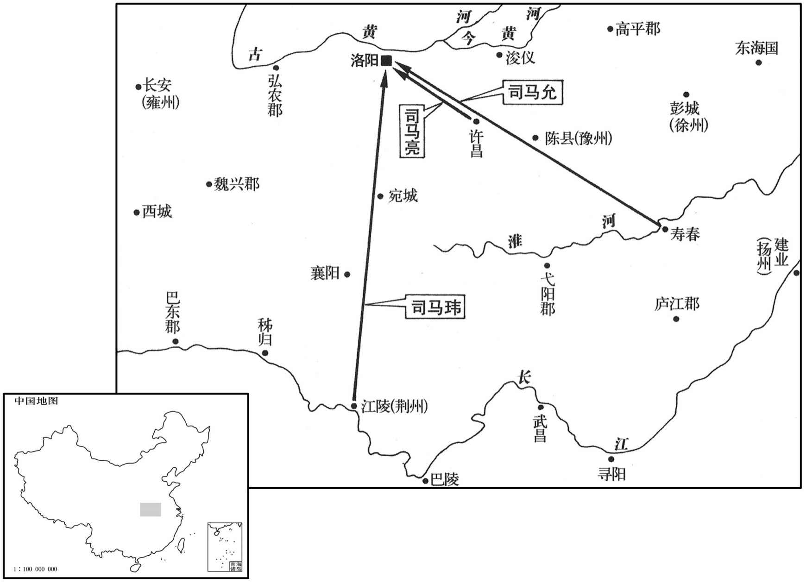
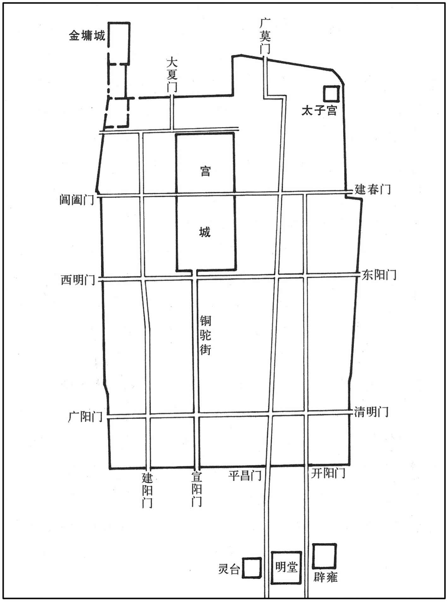
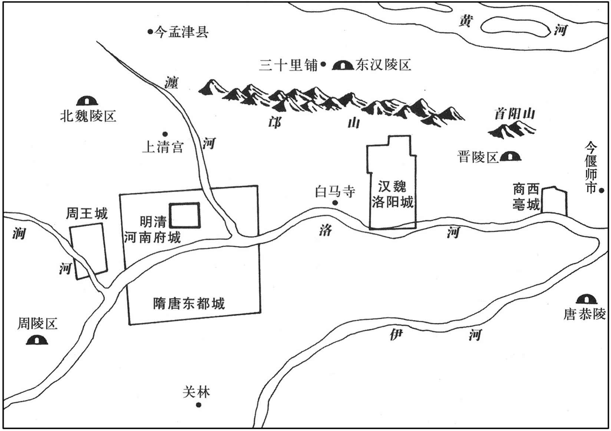
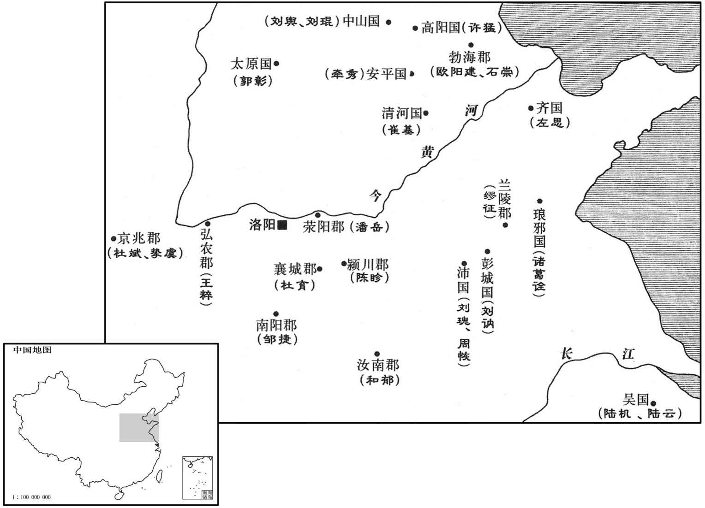
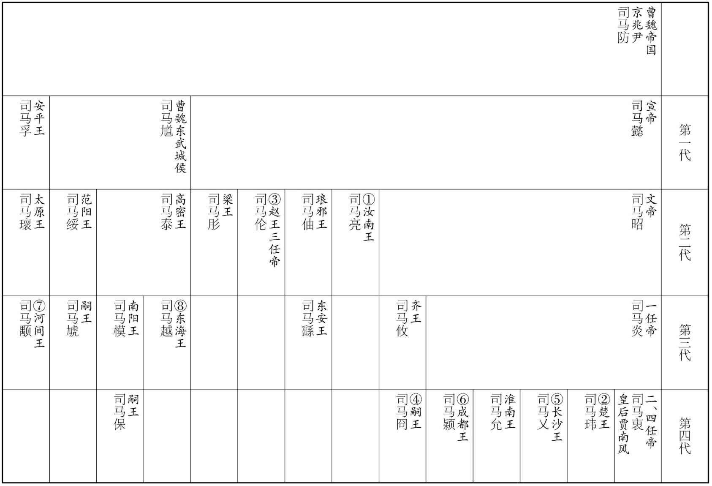
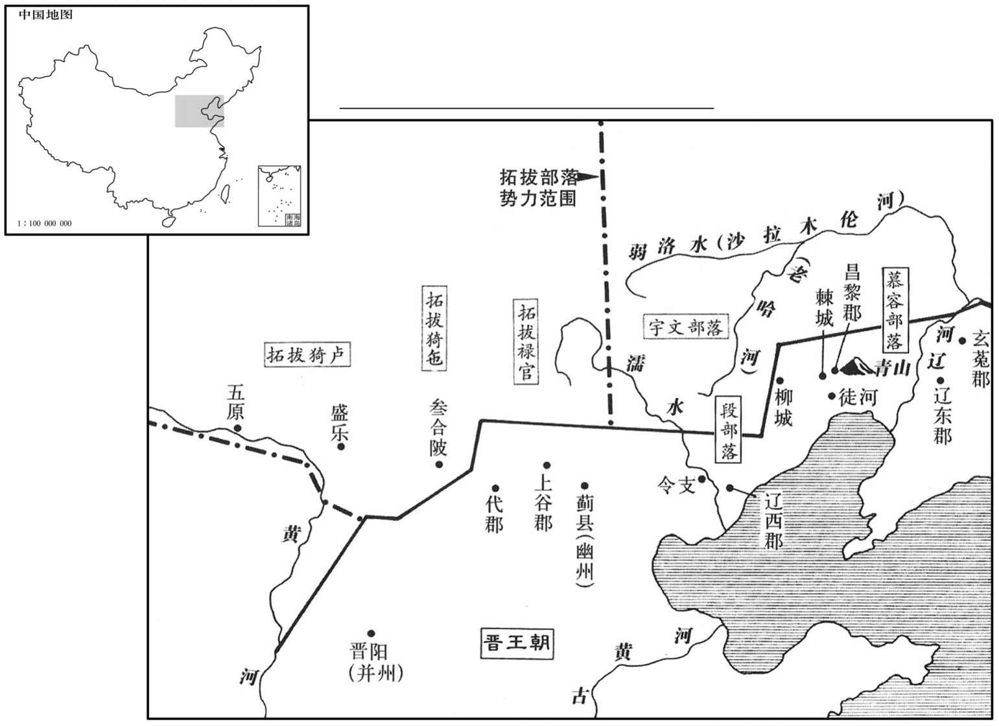
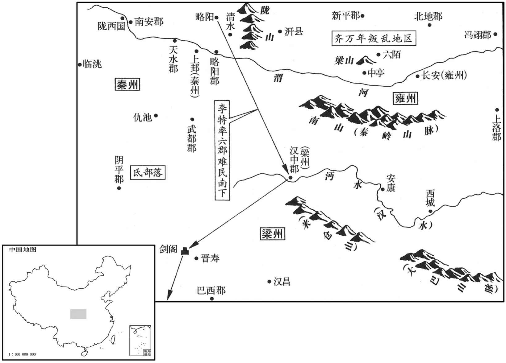

卷次与人物目录 / 卷82
资治通鉴 · 卷第八十二【晋纪四】
公元289年至公元298年 · 原文、白话与胡三省注
本页按胡注本编排保存全卷内容。白话采用本站所据译本，未可靠对应的内容另列说明；事件标题用于定位，并非原书文字。
本卷共93段原文，89段有译文对应，4段缺译或待核对。
卷第八十二【晋纪四】起屠维作噩（己酉），尽着雍敦牂（戊午），凡十年。
卷首原文与注释
世祖武皇帝下
公元289年 · 晋世祖武皇帝太康十年
太康十年〔（己酉、二八九）〕
上传原文的注释括号有异常，字符原样保留；无法可靠划分的段落默认全文显示。
本年事件索引（现代整理）
夏，四月，太庙成；乙巳，祫祭；〔祫，大合祭也。公羊传曰：大祫者何﹖毁庙之主陈于太祖，未毁庙之主皆升，合食于太祖。祫，胡夹翻。〕大赦。
夏季，四月，太庙建成。乙巳（十一日），集中远近祖先进行合祭。大赦天下罪人。
慕容廆遣使请降；〔降，户江翻。〕五月，诏拜廆鲜卑都督。廆谒见何龛，以士大夫礼，巾衣到门；〔魏、晋间，士大夫谒见尊贵，以巾転，单衣也。龛，口含翻。〕龛严兵以见之，廆乃改服戎衣而入。人问其故，廆曰：「主人不以礼待客，客何为哉！」龛闻之，甚凓，深敬异之。〔受降如受敌，居边之帅，严兵以见四夷之客，未为过也，何必以为凓乎！〕时鲜卑宇文氏、段氏方强，〔段氏，东部鲜卑也。杜佑曰：宇文莫槐出于辽东塞外，代为鲜卑东部大人。徒河段疾六眷出辽西，困乱，被卖为渔阳乌桓大人库専家奴。库専以其健，使将，众，诣辽西逐食，遂招诱亡叛，以至强盛。余按晋书王浚传：段疾六眷，务勿尘之世子。段氏自务勿尘以来，强盛久矣，疾六眷因乱被掠，容或有之；务勿尘既能为部落之帅，恐不待其子招诱而后能强盛也。〕数侵掠廆，廆卑辞厚币以事之。段国于阶以女妻廆，生皝、仁、昭。〔慕容、段氏遂为婚姻之国。数，所角翻。单，音蝉。妻，七细翻。〕廆以辽东僻远，徙居徒河之青山。〔徒河县，前汉属辽西，后汉属辽东属国，魏、晋省，并入昌黎郡界。后慕容氏复置徒河县，拓跋魏太武真君八年，并徒河入昌黎郡广兴县。杜佑曰：徒河青山，在营州郡城东百九十里。〕
慕容派使者来晋朝请求投降。五月，晋武帝下诏拜慕容为鲜卑都督。慕容晋见何龛，持士大夫的礼节，以幅巾裹发，身着单衣。他到了门口，何龛却整肃部队会见他，慕容于是又改换军服进了门。有人问他为什么要这样做，慕容说：“主人不以礼节来接待宾客，客人又能怎么样呢？”何龛听到了他的话，心中非常惭愧，同时又深深地敬重他，认为他不同寻常。这时，鲜卑的宇文氏、段氏正处于强盛时期，多次侵犯掠夺慕容，慕容只好以恭敬谦卑的言辞和丰厚的钱财侍奉他们。段国单于段阶，把女儿嫁给慕容，生下了慕容、慕容仁、慕容昭。慕容因辽东位于偏僻遥远之地，于是迁居到徒河的青山。
冬，十月，复明堂及南郊五帝位。〔明堂、南郊除五帝座，见七十九卷泰始二年。〕
冬季，十月，恢复了明堂以及南郊五帝的牌位。
十一月，丙辰，尚书令济北成侯荀勖卒。〔济，子礼翻。〕勖有才思，〔思，相吏翻。〕善伺人主意，〔伺，相吏翻。〕以是能固其宠。久在中书，专管机事。及迁尚书，甚罔怅。〔罔，与惘同。惘浅失志之貌。怅，亦恨望失志之貌。〕
人有贺之者，勖曰：「夺我凤皇池，诸君何贺邪！」
十一月，丙辰（疑误），尚书令、济北成侯荀勖去世。荀勖才思敏捷，善于观察人君的心思，因此能巩固皇帝对他的宠受。他长期在中书省供职，专门掌管机密要事。后来他升迁为尚书令，心中非常惆怅。有人向他贺喜，他说：“夺去我的凤皇池，诸君有什么可祝贺的呢！”中书省设在禁苑，禁苑中有凤皇池，因此中书省又称凤皇池。
帝极意声色，遂至成疾。杨骏忌汝南王亮，排出之。甲申，以亮为侍中、大司马、假黄钺、大都督、督豫州诸军事，治〔【章：甲十一行本「淢」作「镇」；乙十一行本同；孔本同；张校同。】〕许昌；徙南阳王柬为秦王，都督关中诸军事；始平王玮为楚王，都督荆州诸军事；濮阳王允为淮南王，都督扬、江二州诸军事；〔按惠帝元康元年，有司奏荆、扬二州，疆土旷远，统理尤难，于是割扬州之豫章、鄱阳、庐陵、临川、南康、建安、晋安，荆州之桂阳、安成、武昌，合十郡，置江州。则此时未有江州也。疑「江二」二字衍，更俟博考。濮，博木翻。〕并假节之国。〔晋制：都督诸军事有使持节，有持节，有假节；使持节得杀二千石以下持节杀无官位人，若军事与使持节同；假节惟军事得杀犯军令者。〕立皇子大为长沙王，颖为成都王，晏为吴王，炽为豫章王，演为代王；皇孙遹为广陵王。〔嬂，昌志翻。遹，以律翻。〕又封淮南王子迪为汉王，楚王子仪为毗陵王，徙扶风王畅为顺阳王，畅弟歆为新野公。畅，骏之子也。〔畅嗣骏爵，而不居关中之任，故徙封。〕琅邪王觐弟澹为东武公，繇为东安公。觐，軎之子也。〔晋制：宗室封郡公者，制度如小国王。澹，徒览翻，又徒滥翻。軎，音胄〕
晋武帝沉湎于音乐和女色，以至于得了病。杨骏嫉妒汝南王司马亮，把他排挤得离开了朝廷。甲申（二十三日），任命司马亮为侍中、大司马、假黄钺、大都督、督豫州诸军事，镇守许昌。迁南阳王司马柬为秦王，都督关中诸军事。任命始平王司马玮为楚王，都督荆州诸军事。任命濮阳王司马允为淮南王，都督扬、江二州诸军事。以上诸王，都持节去他们各自的封国。立皇子司马为长沙王，司马颖为成都王，司马晏为吴王，司马炽为豫章王，司马演为代王；皇孙司马为广陵王。又封淮南王的儿子司马迪为汉王，楚王的儿子司马仪为毗陵王。迁扶风王司马畅为顺阳王，司马畅的弟弟司马歆为新野公。司马畅是司马骏的儿子。封琅邪王司马觐的弟弟司马澹为东武公，司马繇为东安公。司马觐是司马的儿子。
初，帝以才人谢赐太子，〔才人，位次美人。李延寿曰：晋武帝采汉、魏之制，三夫人、九嫔之下，有美人才人、中才人，爵视千石以下。玖，举有翻。〕生皇孙遹。宫中尝夜失火，帝登楼望之，遹年五岁，牵帝裾入闇中曰：「暮夜仓猝，宜备非常，不可令照见人主。」帝由是奇之。尝对群臣称遹似宣帝，故天下咸归仰之。帝知太子不才，齚恃遹明慧，故无废戏之心。复用王佑之谋，〔佑，王济从兄也，与羊祜等并事文帝，帝宠信之。复，扶又翻；下复以同。〕以太子母弟柬、玮、戍分镇要害。〔要害，谓雍、荆、扬之地。〕又恐杨氏之偪，复以佑为北军中候，典禁兵。帝为皇孙遹高选僚佐，〔为，于伪翻。〕以散骑常侍刘寔志行清素，命为广陵傅。〔自魏以来，王国置师、友，晋避景帝讳，改师为傅。行，下孟翻。〕
当初，晋武帝把才人谢玫赐给太子，生下了皇孙司马。有一天夜里，皇宫中失火了，晋武帝登上楼观望。司马当时只有五岁，他牵着晋武帝的衣襟走进昏暗的地方，说：“夜里突然出事，应当防备突如其来的变故，不可以站在亮处，让别人看到人君。”晋武帝从此认为司马很不一般。晋武帝曾经当着群臣称赞司马像晋宣帝，所以天下的人都归心敬慕司马。晋武帝知道太子没有才能，但是凭藉司马的聪明才智，晋武帝才没有废黜太子的想法。晋武帝又用王佑的计谋，把太子的同母弟弟司马柬、司马玮、司马允都派出去镇守要害地区。晋武帝担心会受到杨氏的逼迫，又任王佑为北军中候，党管皇帝的亲兵。晋武帝为了皇孙司马，以很高的标准挑选他身边的僚属与辅佐。散骑常侍刘志向与操守高洁清廉，因此被任命为广陵王司马的老师。
寔以时俗喜进趣，〔喜，许记翻。趣，读曰趋。〕少廉让，〔少，诗沼翻。〕欲〔【章：甲十一行本「欲」上有「尝着崇让论」五字；乙十一行本同；孔本同，退斋校同。】〕令初除官通谢章者，必推贤让能，乃得通之。一官缺则择为人所让最多者用之。以为：「人情争则欲毁己所不如，让则竞推于胜己。故世争则优劣难分，时让则贤智显出。当此时也，能退身修己，则让之者多矣；虽欲守贫贱，不可得也。驰骛进趋而欲人见让，犹却行而求前也。」
刘看到当时的风气是喜好趋附，缺少廉洁与谦让，曾经写了《崇让论》，建议初次被授予官职、递交谢表的人，必须是能够推举、谦让贤能的人，才能够让他通过。如果有空缺的官职，那么就要挑选平时为人谦让最多的人来担任。他认为：“人的本性是：如果争斗起来的话，就要毁谤自己所比不上的人，如果谦让，就会争着推举胜过自己的人。所以如果争斗，世上就优劣难以区分，如果有了谦让的风气，那么贤能才智之人就会显现出来了。在现在这种时候，能够退身自我修养，谦让的人就会多起来，谦让的人多了，即使想守着贫贱不做官，也不可能了。如果奔走趋附想让别人对自己谦让，这就如同想向前走却向后倒退一样。”
淮南相刘颂〔王国置相，汉制也；晋后改为内史。〕上疏曰：「陛下以法禁宽纵，积之有素，未可一旦以直绳御下，此诚时宜也。然至于矫世救弊，自宜渐就清肃；譬犹行舟，虽不横截迅流，然当渐靡而往，稍向所趋，然后得济也。〔此引济川为譬也。济大川者，虽曰横绝大川，乱流而渡，然必因水劫渐靡，而行舟向其所趋，以登陆之路，然后汔济，否则为水势所使，不能制舟以向所趋，不得登岸矣。〕
淮南相刘颂上疏说：“陛下由于刑法禁令宽松放任，想改变这种状况，但是这种局面是平时日积月累形成的，不可能一下子就能用公正的标准治理下民，这确实要等到时势所宜的机会。然而至于矫正世风，救治时弊，自然应当逐渐走向清廉整肃。这就好比行船，虽然不能径直渡过急流，然而应当渐渐随着水势往前走，一点一点地朝着自己要去的方向，然后就能渡过河去。
自泰始以来．将三十年，〔帝受，禅，改元泰始，至是二十五年。〕凡诸事业，不茂既往。〔言立事造业，不加茂于往时也。〕以陛下明圣，犹未反叔世之敝，以成始初之隆，传之后世，不无虑乎！仗夫异时大业，或有巿不安，其忧责犹在陛下也。
“自从泰始以来，已将近三十年了，各项事业却并没有比以往更加兴旺。凭着陛下的明圣，还没有纠正衰乱时代的弊病，以成就最初的隆盛，传之于后世，这难道不值得忧虑吗？假使以后大业或许不安稳，那么忧虑与责任也还是在陛下。
臣闻为社稷计，莫若封建亲贤。然宜审量事势，〔量，音良。〕使诸侯率义而动者，其力足以维带京邑；若包藏祸心，其势不足独以有为。其齐此甚难，陛下宜与达古今之士，深共堸之。〔帝之使诸王分镇而内不足以齐之，此刘颂所为深虑也。〕周之诸侯，有罪诛放其身，而国祚不泯；〔如周烹齐哀公而立其弟静，宣王诛鲁侯伯御而立孝公之类。〕汉之诸侯，有罪或无子者，国随以亡。〔见前，后汉纪。〕今宜反汉之敝，循周之旧，则下固而上安矣。〔余谓晋之所以待藩王者，其宜不在此也。〕
“我听说为国家打算，不如分封亲属与贤能之人。然而应当审度、衡量事情发展的趋势。假使诸侯服从正义而行动，其力量足以护卫京城，如果他们包藏祸心，那么他们的势力也不足以独立地有所作为。这件事情要整治好是很困难的，陛下应当与通达古今的人士在一起，共同深入地筹划这件事情。周代的诸侯，如果犯了罪就要遭到惩罚放逐，但其爵位不断绝。汉代的诸侯如果犯了罪或者没有儿子，那么他的封国也就随之失去了。如今应当改变汉代的弊端，遵循周代的旧制度，那么下面巩固上面也就安定了。
天下至大，万事至众，人君至少，〔少，始绝翻。〕同于天日，是圣王之化，执要于己，委务于下，非恶劳而好逸，〔好，呼到翻。〕诚以政体宜然也。夫居事始以别能否，甚难察也；〔别，彼列翻。〕因成败以分功罪，甚易识也。〔易，以鼓翻；下居易同。〕今陛下每精于造始而略于考终，此政功所以未善也。人主诚能居易执要，考功罪于成败之后，则群下无所逃其诛赏矣。
“天下极其大，万种事物极其多，而君王却极少，就像天空和太阳。因此圣明的君王实行教化，要自己掌握住根本，把事务委托给手下去办理，这并不是好逸恶劳，实在是由于国家的体制适宜于如此。处理事情在一开始的时候就去区分事情办得好还是不好，是很难观察出来的，等到事情的发展显示出了成功与失败，这时候再去区分功劳与罪过就很容易识别了。如今陛下常常是精心于初始的构建却忽略对结局的考察，这正是治理的功效所以不完美的原因。人君如果确实能够处于平易而抓住根本，于成功失败的结局之后考察功劳与罪过，那么手下的官员们就没有地方逃避奖赏与惩治的处理了。
古者六卿分职，耱宰为师；〔周礼：天官耱宰，地官司徒，春官宗伯，夏官司马，秋官司寇，冬官司空，是为六卿，而耱宰总之。〕秦、汉已来，九列执事，丞相都总。〔此西都以前制也。〕今尚书制断，诸卿奉成，〔自汉光武以来，以吏事责尚书，事归台阁，诸卿奉成而已。断，丁乱翻。〕于古制为太重。可出众事付外寺，〔外寺，谓诸卿寺。使得专之；尚书统领大纲，若丞相之为，岁终课功，校簿赏罚而已，斯亦可矣。今动皆受成于上，上之所失，不得复以罪下，〔复，扶又翻。〕岁终事功不建，不知所责心木。
“古时候六卿分工，各司其职，冢宰是统领。秦、汉以来，九卿的职掌，由丞相总管。现在事情都由尚书裁断，各官署奉行成规，与古时候的制度相比，尚书的事务太重。可以把众多的事务交付各官署办理，使各官署有专门负责的权力。尚书统领根本大纲，如同丞相所做的，年终考查功效，校阅簿籍，实行赏罚而已，这也就可以了。现在动不动就接受上面的现成的决定，上面如果有失误、过错，就不能怪罪于下属，等到年终，没有功绩上的建树，也不知该由谁来承担责任。
夫细过谬妄，人情之所必有，而悉纠以法，则朝野无立人矣。近世以东为监司者，类大纲不振而微过必举，〔御史台官及诸州刺史，皆监司也。朝，直遥翻。监，工衔翻。〕盖由畏避豪强而又惧职事之旷，则谨密网以罗微罪，使奏劾相接，状似尽公，而挠法在其中矣。〔劾，户概翻，又户得翻。挠，奴教翻。〕是以圣王不善碎虎之案，必责凶猾之奏，则害政之奸，自然禽矣。夫创业之勋，在于立教定制，使遗风系人心，余烈匡幼弱，后世凭之，虽昏犹明，虽愚若智，乃足尚也。〔言法制修明，虽后嗣昏愚，有所据依，则其治犹若明智之为也。此言盖指太子不能克隆堂构，而帝又无典则以贻子孙也。然苟非其人，道不虚行，以刘禅之庸而辅之以诸葛亮，则昭烈虽死，犹不死也。孔明死，则孔明治蜀之法制虽存，禅不能守之矣。〕
“细微的过失，荒谬的言行，这是人的本性所难免的，但是全都要用刑法来矫正，那么朝野上下就没有人能够立身了。近世以来，担任监察的官员，大都不抓根本大事，却对微小的过失抓住不放，这大概是因为畏惧、躲避豪强却又担心荒废了职责，因此就谨慎地使法律周密，以搜罗微小的过错，使得上奏的揭发罪行的文状接连不断，表面看来是在为公事尽职，实际上却扰乱了法规。因此圣明的君王对那些琐碎细密的公事不感兴趣，而对于那些揭发了凶恶、奸诈大事的奏章则一定要过问，那么损害国家政事的邪恶的人或事，自然就被抓住了。创立基业的功勋，在于设立政令，制定规章，使得遗留下来的风尚能够使后人的心有所寄托；遗留下来的功业，能够辅助、纠正年小而又软弱的后人。后代能够凭借前代制定的法规，即使是昏庸的人，仍然能作出明智的事情，即使是蠢笨无知的人，也如同有才智的人，使得后人足以得到帮助。
至夫修饰官署，凡诸作役，恒伤太过，〔恒，户登翻。〕不患不举，此将来所不须于陛下而自能者也。今勤所不须以伤所凭，窃以为过矣。」帝皆不能用。
“至于那修饰官署的事情，各种劳作，通常是过份得成了一种妨害，这种事情不用担心发动不起来，这是即使到了将来，没有陛下的命令也自然能办成的事情。现在的问题在于，对于不急的事情抓得紧，办得勤恳，但却损伤了所赖以依仗的根本，我私下认为有些过分了。”对他的意见晋武帝都没有采纳。
诏以刘渊为匈奴北部都尉。〔时改匈奴五部帅为于部都尉。〕渊轻财好施，〔好，呼到翻。施，式智翻。〕倾心接物，五部豪桀，幽、冀名儒，多往归之。〔为刘渊得众以移晋祚张本。〕
晋武帝下诏，任命刘渊为匈奴北部都尉。刘渊轻视钱财，喜好施舍，倾心与人交际，匈奴五部的豪杰之士以及幽州、冀州的名儒，都去投奔、归附他。
奚轲男女十万口来降。〔奚轲，亦夷种也。〕
奚轲人男女共十万人投降了晋。
原书衔接
孝惠皇帝上之上〔讳衷，字正度，武帝第二子也。谥法：柔质慈民曰惠。〕
公元290年 · 晋孝惠皇帝永熙元年
永熙元年〔（庚戌、二九○）〕
本年事件索引（现代整理）
春，正月，辛酉朔，改元太熙。〔太熙，武帝所改。至四月己酉，太子即位，改元永熙。未踰年改元，犹为非礼，安有先帝初弃群臣，太子即位，而遽以是日改元乎！〕
春季，正月，辛酉朔（初一），改年号为太熙。
己巳，以王浑为司徒。
己巳（初九），任命王浑为司徒。
司空、侍中、尚书今卫瓘子宣，尚繁昌公主。宣嗜酒，多过失，杨骏恶瓘，欲逐之，〔恶，乌路翻。〕乃与黄门谋共毁宣，劝武帝夺公主。瓘凓惧，告老逊位。诏进瓘位太保，以公就第。〔瓘封菑阳公。〕
司空、侍中、尚书令卫的儿子卫宣，尚娶繁昌公主。卫宣嗜酒贪杯，时常因喝酒而误事。杨骏憎恨卫，就想把他驱逐出去。于是，他就和宦官黄门密谋一起诽谤卫宣，劝晋武帝不要把公主嫁给卫宣。卫知道了这件事以后，又惭愧又恐惧，就以上了年纪为由，请求退职。晋武帝下诏，晋升卫为太保，以阳公的身份回到家里。
剧阳康子魏舒薨。
剧阳康子魏舒去世。
三月，甲子，以右光禄大夫石鉴为司空。〔晋志：左、右光禄大夫假金章紫绶及光禄大夫君金章紫绶者，品秩第二。〕
三月，甲子（初五），任命右光禄大夫石鉴为司空。
帝疾笃，未有顾命。动旧之臣多已物故，侍中车骑将军杨骏独侍疾禁中。大臣皆不得在左右，骏因辄以私意改易要近，树其心腹。会帝小间，〔间，如字。间者，病小差也。〕见其新所用者，正色谓骏曰：「何得便尔！」时汝南王亮尚未发，〔去年，遣亮出督豫州。〕乃令中书作诏，以亮与骏同辅政，又欲择朝士有闻望者数人佐之〔朝，直遥翻。闻，音问。〕骏从中书供诏观之，得便藏去，中书监华廙恐惧，〔华，户化翻。廙，逸职翻，又羊至翻。〕自往索之，终不与。会帝复迷乱，〔索，山客翻。复，扶又翻。〕皇后奏以骏辅政，帝颔之。夏，四月，辛丑，皇后召华廙及中书令何劭，口宣帝旨作诏，以骏为太尉、太子太傅、都督中外诸军事、侍中、录尚书事。诏成，后对廙、劭以呈帝，帝视而无言。廙，歆之孙；劭，曾之子也。〔华歆仕汉、魏之间，何曾仕魏、晋之间，位皆至公，二人身名相似也。〕遂趣汝南王亮赴镇。〔趣，读曰促。〕帝寻小间，问：「汝南王来未﹖」左右言未至，帝遂困马。己酉，崩于含章殿。〔年五十五。坤之六三曰：含章可贞。坤以含弘为德，后道也。含章殿在皇后宫中。春秋书「公薨于小寝」，即安也。〕帝宇量弘厚，明达好谋，〔好，呼到翻。〕容纳直言，未尝失色于人。
晋武帝病势沉重，没有遗诏。有功绩的旧臣们大多已经死亡，侍中、车骑将军杨骏独自在宫中侍候晋武帝的病。杨骏不让大臣们守候在晋武帝身边，他趁着这个机会，擅自作主把晋武帝身边重要亲近的职位都换了人，培植他自己的心腹。这时，晋武帝的病情稍微有了好转，他看到身边的人都被更换了，就严肃地对杨骏说：“你怎么能这么作呢？”这时汝南王司马亮还没有离开京都，晋武帝就命令中书作诏书，命令司马亮与杨骏一同辅佐政事，还打算选择中央的官吏中有名望的几个人协助司马亮和杨骏，杨骏从中书借来诏书观看，拿到手里就收藏起来走了。中书监华非常害怕，就到杨骏那里去索要诏书，杨骏最终也没有把诏书还给他。这时晋武帝又进入昏迷装态，皇后上奏任命杨骏辅政，晋武帝点头答应了她。夏季，四月，辛丑（十二日），皇后召来华以及中书令何劭，口头宣布晋武帝的旨意作为诏书，任命杨骏为太尉、太子太傅、都督中外诸军事、侍中、录尚书事。诏书写成之后，皇后当着华、何劭的面呈送给晋武帝，晋武帝看了诏书后什么也没有说。华是华歆的孙子。何劭是何曾的儿子。随后，催促汝南王司马亮奔赴镇所。过了不久，晋武帝的病又有了好转，他就问：“汝南王来了没有？”身边的人说还没有到。这时，晋武帝病重垂危。己酉（二十日），晋武帝在含章殿去世。晋武帝器宇度量开阔宽厚，聪明通达，喜好谋划。能容纳直率的言辞，从来没有在别人面前有不庄重的仪表。
太子即皇帝位，大赦，改元，〔改太熙为永熙。〕尊皇后曰皇太后，立妃贾氏为皇后。
太子登极作了皇帝。大赦天下，改年号为永熙。尊杨皇后为皇太后，立太子妃贾氏为皇后。
诏石鉴与中护军张劭监作山陵。〔监，工衔翻。〕
晋惠帝命令石鉴与中护军张劭监督建造陵墓。
杨骏入居太极殿，〔前殿也。〕梓宫将殡，六宫出辞，而骏不下殿，〔时梓宫盖自含章殿徙殡太极殿。〕以虎贲百人自卫。〔贲，音奔。〕
杨骏进入太极殿居住，这时晋武帝的棺材将要移到太极殿停柩，六宫妃嫔都出来与晋武帝的灵柩辞别，杨骏却不下殿，用一百名勇士保卫他。
汝南王亮畏骏，不敢临丧，哭于大司马门外。〔亮自大司马出镇，未行，尚居府中，不敢入宫临丧，而器于大司马府门外。君父之丧，哭于门外，非礼也。〕出营城外，表求过葬而行。或告亮欲举兵讨骏者，骏大惧，白太后，令帝为手诏与石鉴、张劭，使帅陵兵讨亮。劭，骏甥也，即帅所领趣鉴速发；〔帅，读曰率。趣，读曰促。〕鉴以为不然，保持之。〔保亮不举兵，而持讨亮之兵不发也。〕亮问计于廷尉何勖，勖曰：「今朝野皆归心于公，〔朝，直遥翻；下同。〕公不讨人而畏人讨邪！」亮不敢发，夜，驰赴许昌，乃得免。骏弟济及甥河南尹李斌皆劝骏留亮，骏不从。济谓尚书左丞傅咸曰：「家兄若征大司马，退身避之，门户庶几可全。」〔几，居希翻。〕咸曰：「宗室外戚，相恃为安。但召大司马还，共崇至公以辅政，无为避也。」济又使侍中石崇见骏言之，骏不从。
汝南王司马亮害怕杨骏，不敢去赴晋武帝的丧事，在大司马府门外哭晋武帝。司马亮到城外居住，上表请求过了晋武帝的葬礼再出发去镇守之地。有人告发说司马亮要兴兵讨伐杨骏，杨骏异学恐惧，告诉了太后，让晋惠帝手写诏书给石鉴和张劭，让他们二人率修建陵墓的士兵去征讨司马亮。张劭是杨骏的外甥，他立即率领部下催促石鉴马上出发。石鉴却认为事情并不是这样，他保证司马亮不会举兵，掌握住手下的士兵不动。司马亮向廷尉何勖询问计策，何勖说：“现在朝野上下都从心里归附于您，您不去讨伐别人，却害怕别人来讨伐您吗？”司马亮不敢发兵，夜里，快马加鞭地奔赴许昌，才免去了一场灾难。杨骏的弟弟杨济以及外甥河南尹李斌都劝杨骏留下司马亮，杨骏不听。杨济对尚书左丞傅咸说：“家兄如果征召大司马司马亮，退身躲避他，那么门户也许可以保全。”傅咸说：“皇族与外戚，相互依赖才能安定。只把大司马召回来，共同本着公正无私的原则辅佐朝政，用不着躲避司马亮。”杨济又让侍中石崇去见杨骏，对他说了这些话，杨骏不听。
五月，辛未，葬武帝于峻阳陵。
五月，辛未（十三日），在峻阳陵安葬了晋武帝。
杨骏自知素无美望，欲衣魏明帝即位故事，普进封爵以求媚于众。左军将军傅祗〔晋志曰：按魏明帝时有左军，则左军。魏官也。〕与骏书曰：「未有帝王始崩，臣下论功者也。」骏不从。祗，嘏之也。〔傅嘏仕魏，显于嘉平、正元之间。〕丙子，诏中外群臣皆增位一等，预丧事者增二等，二千石已上皆封关中侯，〔汉献帝建安二十年，魏武王置关中侯。据晋书帝纪，关中侯又在关内侯之下。〕复租调一年。〔复，方目翻。调，徒吊翻。〕散骑常侍石崇、〔前书「侍中石崇」，此作「散骑常侍」，必有一误，盖因旧史成文也。〕散骑侍郎何攀共上奏，〔上，时掌翻。〕以为：「帝正位东宫二十余年，今承大业，而班赏行爵，优于泰始革命之初及诸将平吴之功，轻重不称。〔称，尺证翻。〕且大晋卜世无穷，今之闰制，当垂于后，若有爵必进，则数世之后，莫非公侯矣。」不从。
杨骏心里明白他平时就没有好名声，他想效法魏明帝即位的先例，普遍给大臣们进封爵位，以便讨好众人，收买人心。左军将军傅祗写信对杨骏说：“还没有听说帝王刚死，就给臣下论功行赏的事。”杨骏不听。傅祗是傅嘏的儿子。丙子（十八日），下诏书，朝廷内外群臣一律晋升一级，参预晋武帝丧事的晋升二级，二千石以上的官员一律封为关中侯，免除一年的赋税。散骑常侍石崇、散骑侍郎何攀一起上奏，认为：“皇帝被正式立为太子有二十多年，现在继承了大业，但是遍施奖赏，赐予爵位，比泰始革命之初以及各位将领平吴的功绩得到的奖励还要丰厚，这就使轻重不相称了。况且占卜得知，大晋传国世代无穷，现在开创的制度，是要传之于后世的，如果有爵位就必得进升，那么几代以后，就没有人不是公侯了。”他们的意见不被采纳。
诏以太尉骏为太傅、大都督、假黄钺，录朝政，百官总己以听。傅咸谓骏曰：「谅闇不行久矣。〔自汉文短丧之诏，嗣君即吉听政，谅闇三年之制，不行久矣。闇，音阴。〕今圣上谦冲，委政于公，而天下不似为善，惧明公未易当也。〔易，以豉翻；下同。〕周公大圣，犹致流言，〔周成王幼冲，周公摄政而四国流言。〕况圣上春秋非成王之年乎！〔武帝泰始二年，帝为皇太子，时年九岁，至是三十二岁矣。〕窃谓出陵既毕，明公当审思进退之宜，苟有以察其忠款，言岂在多！」骏不从。咸数谏，骏渐不平，欲出咸为郡守。李斌曰：「斥逐正人，将失人望。」乃止。杨济遗咸书曰：〔数，所角翻。遗，于季翻。〕「谚云：『生子痴，了官事。』官事未易了也。想虑破头，故具有白。」〔虑咸以直言致祸也。〕咸复书曰：「卫公有言：『酒色杀人，甚于作直。』坐酒色死，人不为悔，而逆畏以直致祸，此由心不能正，欲以苟且为明哲耳。〔读曰：既明且哲，以保其身。此言世人不能直言，特似苟且为保身之计耳。〕自古以直致祸者，当由矫枉过正，或不忠笃，欲以亢厉为声，〔亢，口浪翻。〕故致忿耳，安有悾悾忠益而返见怨疾乎！」〔悾，苦红翻。悾空，信也；包咸曰：悫也。〕
晋惠帝下诏书，任命太尉杨骏为太傅、大都督、假黄钺，总领朝政，百官各自掌管自己的职责，听命于杨骏。傅咸对杨骏说：“居丧三年的制度，已经有很久不实行了。如今皇帝谦虚，把政事委托给您，但是天下的人们并不认为这样作好，恐怕您还不容易抵挡。周公是大圣之人，尚且招来了流言蜚语，何况皇帝的年龄并不是当年成王的年龄呢！我私下认为，武帝葬事既已办完，您应当慎重考虑进退的事情了，如果可以证明您的真诚，岂在于言辞的多少呢？”杨骏不听傅咸的话，傅咸又多次劝谏，杨骏逐渐坐不住了，想把傅咸赶出朝廷让他去做郡守。李斌劝杨骏说：“斥逐了正直的人，就要失去人们对你的敬仰。”杨骏才没有赶走傅咸。杨济给傅咸的信上说：“俗语说：‘生一个傻儿子，官场上的事儿他太明白。’对官场上的事情是不宜搞得太清楚的。我为你思考忧虑脑袋都要破了，所以写信提醒你。”傅咸回信说：“卫公有言：‘酒色杀人，比直言杀人还要厉害。’因酒色获罪而死，人们不觉得后悔，但是却害怕由于正直而招来的祸殃，这是由于心不能正，想把苟且偷生当作明智的处世方法以保全自己。自古以来由于正直而招来了灾祸的人，是由于矫正邪恶过了头，或者是因为不是真心实意，想以严酷来博取名声，所以会招来怨恨。哪里会有忠诚恳切做好事，却反而被人憎恨的道理呢？”
杨骏以贾后险悍，多权略，忌之，〔悍，下罕翻，又侯旰翻。〕故以其甥段广为散骑常侍，管机密；张劭为中护军，典禁兵。凡有诏命，帝省讫，〔省，悉景翻。〕入呈太后，然后行之。-
杨骏因为贾后阴险蛮横又富于权术谋略，而忌恨她。所以他任命自己的外甥段广为散骑常侍掌管机密要事；张劭为中护军，统领皇帝的亲兵。凡是有诏命，皇帝看过之后，吴送给太后，然后实行。
骏为政，严碎专愎，〔愎，弼力翻，很也。〕中外多恶之。〔恶，乌路翻。〕冯翊太守孙楚谓骏曰：「公以外戚居仂、霍之任，当以至公、诚信、谦顺处之。〔守，式又翻。处，昌吕翻。〕今宗室强盛，而公不与共参万机，内怀猜忌，外树私昵，祸至无日矣！」〔昵，尼质翻。〕骏不从。楚，资之孙也。〔孙资事魏三祖，掌机密。〕
杨骏当政，严厉琐碎而又专断固执，朝廷内外的人都恨他。冯翊太守孙楚对杨骏说：“您以外戚身份担当着伊尹、霍光的重任，应当以公正无私、诚实不欺、谦虚和顺为人处事。当前皇族强盛，而您却不与他们一起参与日常政务，心里怀着猜疑妒忌，在外培植亲近宠爱的人，这样下去，灾祸临头的日子就没有几天了！”杨骏也不听。孙楚是孙资的孙子。
弘训少府蒯钦，骏之姑子也，数以直言犯骏，他人皆为之惧，〔景皇后居弘训宫，置少府。数，所角翻。为，于伪翻。〕钦曰：「杨文长虽闇，犹知人之无罪不可妄杀，〔杨骏，字文长。〕不过疏我，我得疏，乃可以免；不然，与之俱族矣。」
弘训少府蒯钦，是杨骏姑姑的儿子，多次以直言冒犯杨骏，别人都为他担惊受怕，蒯钦说：“杨骏虽然昏庸，仍然知道对没有罪过的人不可以乱杀，他只不过会疏远我，我被他疏远，就可以免去灾祸，要是不这么做，我就会和他一起被灭族了。”
骏骍匈奴东部人王彰为司马，〔匈奴东部即匈奴左部也，居太原兹氏县。〕彰逃避不受。其友新兴张宣子怪而问之，〔汉献帝建安二十年，省云中、定襄、五原、朔方郡，郡置一县，领其民，合为新兴郡，属并州。〕彰曰：「自古一姓二后，未有不败。况杨太傅昵近小人，疏远君子，〔近，其靳翻。远，于愿翻。〕专权自恣，则无日矣。吾踰海出塞以避之，犹惧及祸，宗何应其辟乎！且武帝不惟社稷大计，〔惟，思也。〕嗣子既不克负荷，〔荷，下可翻。〕受遗者复非其人，天下之乱，可立待也。〔杨骏之败，人皆知之，独骏不知耳。凶人吉其凶，其谓是乎！复，扶又翻。〕
杨骏征召匈奴东部人王彰为司马，王彰逃避不接受。王彰的朋友新兴人张宣子责怪他，问他为什么这样做，王彰说：“自古以来，一姓却有两位皇后，就没有不败亡的。何况太傅杨骏亲近小人，疏远君子，专权放纵，败亡没有几天了。我跨海出关地躲避他，尚且害怕祸事殃及到我身上，为什么还要响应他的征召呢？而且武帝不考虑国家的大计，继位的儿子已经不能挑起重担，接受遗诏辅佐的人又不是合适的人选，天下的动乱很快就会到来。”
秋，八月，壬午，立广陵王遹为皇太子。以中书监何劭为太子太师，卫尉裴楷为少师，吏部尚书王戎为太傅，前太常张华为少傅，卫将军杨济为太保，尚书和峤为少保。〔晋东宫六傅，惟此时其官。〕拜太子母谢氏为淑媛。〔媛，于眷翻。晋志：淑妃、淑媛、淑仪、修华、修容、修仪、婕妤、容华、充华，是为九嫔，银印，青绶。〕贾后常置谢氏于别室，不听与太子相见。初，和峤尝从容言于武帝曰：〔从，千容翻。〕「皇太子有淳古之风，而末世多伪，恐不了陛下家事。」武帝默然。后与荀勖等同侍武帝，武帝曰：「太子近人朝差长进，〔朝，直遥翻。长，丁丈翻，今知两翻。〕卿可俱诣之，粗及世事。」〔粗，坐五翻，略也。〕既还，勖等并称太子明识雅度，诚如明诏。峤曰：「圣质如初。」武帝不悦而起。及帝即位，峤从太子遹入朝，贾后使帝问曰：「卿昔谓我不了家事，今日定如何﹖」峤曰：「臣昔事先帝，曾有斯言；言之不效，国之福也。」
秋季，八月，壬午（二十六日），立广陵王司马为皇太子。任命中书监何劭为太子太师，卫尉裴楷为少师，吏部尚书王戎为太傅，前太常张华为少傅，卫将军杨济为太保，尚书和峤为少保。拜太子的母亲谢氏为淑媛。贾后常常把谢氏安排在另外的房间居住，不让她和太子相见。当初，和峤曾经从容地对晋武帝说：“皇太子朴质而在古风，但是将要衰乱的时代多伪诈，恐怕他不能办好陛下的家事。”晋武帝沉默不语。后来，和峤与荀勖等人一起在晋武帝身边伺候，晋武帝说：“太子近来进入朝廷稍微有了长进，你们可以一起去他那里，粗略地问他一些当世的事情。”于是他们就去了太子那里，回来以后，荀勖等人都称赞太子聪明有见识，气度不凡，确实如武帝说的那样。和峤却说：“太子的资质和原来一样。”晋武帝不高兴地站起身来。等到太子继位作了皇帝。和峤跟随太子司马入朝，贾后让晋惠帝问和峤：“你以前说我不明了家事，今天究竟怎么样呢？”和峤说：“我从前奉事先帝，曾经说过这话，我说的话没有得到证实，这是国家的幸运。”
冬，十月，辛酉，以石鉴为太尉，陇西王泰为司空。
冬季，十月，辛酉（初六），任命石鉴为太尉，陇西王司马泰为司空。
以刘渊为为建威将军、匈奴五部大都督。〔渊为五部大都督，则左国城大单于之权舆也。〕
任命刘渊为建威将军、匈奴五部大都督。
公元291年 · 晋孝惠皇帝元康元年
元康元年〔（辛亥、二九一）〕
本年事件索引（现代整理）
- 晋改元永平
- 贾妃妒杀宫人，杨皇后等为其求情免废
- 贾后密谋联合楚王玮诛杨骏、废杨太后
- 孟观、李肇伪造诏书，诬杨骏谋反并发兵讨伐
- 杨骏拒绝朱振焚门救急之策，部众离散
- 杨珧临刑称石函藏有表章，东安王繇仍处死他
- 晋赦天下，改元元康
- 贾后废杨太后为庶人，张华主张保全其尊号
- 傅祗劝止株连杨骏属官，惠帝下诏赦免
- 晋以汝南王亮、卫瓘辅政，东安王繇升任尚书左仆射
- 傅咸反对汝南王亮滥赏诛杨功臣
- 贾后亲族掌权，东安王繇遭免官流徙
- 贾谧、郭彰权势日盛，士人竞相依附
- 贾后借楚王玮之手罢免汝南王亮、卫瓘
- 楚王玮夜袭汝南王亮，亮及其子被杀
- 荣晦杀害卫瓘及其子孙，楚王玮未能制止
- 张华识破楚王玮专权之势，贾后下令将其处死
- 陇西王泰听从丁绥劝阻，没有起兵助楚王玮
- 卫瓘女申诉父冤，晋追复司马亮、卫瓘爵谥并诛荣晦
- 贾后任用张华、裴頠等辅政，朝野暂时安定
- 晋分荆、扬十郡设置江州
- 晋立司马越为东海王
- 秦王司马柬去世
- 晋召梁王司马肜任卫将军、录尚书事
春，正月，乙酉朔，改元永平。〔永平，杨骏执政所改元也。骏诛，改元元康。〕
春季，正月，乙酉朔（初一），改年号为永平。
初，贾后之为太子妃也，尝以勡，手杀数人，又以戟掷孕妾，子随刃堕；〔孕，以证翻。〕武大怒，修金墉城，将废之。荀勖、冯紞、杨珧〔紞，丁感翻。珧，余招翻。〕及充华赵粲共营救之，曰：「贾妃年少；勡者妇人常情，长自当差。」〔少，诗诏翻。长，知两翻。差，楚懈翻。〕杨后曰：「贾公闾有大勋于社稷，〔贾充，字公闾。晋之代魏，充力居多。〕妃亲其女，正复勡忌，岂可遽忘先德邪！」〔复，扶目翻。〕妃由是得不废。
当初，贾皇后还是太子妻子时，曾经由于嫉妒，亲手杀了几个人，她还用戟投掷怀有身孕的姬妾，使孕妇肚子里的胎儿随着刀锋而落地。晋武帝动怒，修了金墉城要把她废黜。荀勖、冯、杨珧以及嫔纪赵粲都想办法援救她，对晋武帝说：“贾妃年轻，嫉妒本是妇人的本性，长大了自然就会变好的。”杨皇后说：“贾充对国家有大功，贾妃是他的女儿，即使嫉妒，怎么可以这么快就忘记她先人的功德呢？”贾妃因此而没有被废。
后数诚厉妃，〔数，所角翻。〕妃不知后之助己，返以后为构己于武帝，更恨之。及帝即位，贾后不肯以妇道事太后，又欲干预政事，而为太傅骏所抑。殿中中郎渤海孟观、李肇，皆骏所不礼也，〔晋制：二卫置殿中将军中郎、校尉司马。观，如字。〕阴构骏，云将危社稷。黄门董猛，素给事东宫，为寺人监，〔寺人监，主东宫诸阉。陆德明曰：寺，如字，又音侍。〕贾后密使猛与观、肇谋诛骏，废太后。又使肇报汝南王亮，使举兵讨骏，亮不可。肇报都督荆州诸军事楚王玮，玮欣然许之，及求入朝。骏素惮玮勇锐，欲召之而未敢，因其求朝，遂听之。二月，癸酉，玮及都督扬州诸军事、淮南王允来朝。〔朝，直遥翻。〕
杨皇后多次训斥贾妃，贾妃不知皇后这样做是为了帮助她，反而认为皇后在武帝面前陷害她，因而仇恨杨皇后。后来晋惠帝即位，贾皇后不肯以儿媳的身份侍奉皇太后，还想要干预政事，但却被太傅杨骏所遏制。殿中中郎渤海人孟观、李肇，都是杨骏不以礼相待的人，暗地里图谋杨骏，说他将危害国家。宦官黄门董猛，平时在东宫供职，主管宦官。贾皇后秘密指使董猛与孟观、李肇谋划除掉杨骏，废黜太后。又派李肇告知汝南王司马亮，让他发兵讨伐杨骏，司马亮没有答应。李肇告诉了都督荆州诸军事楚王司马玮，司马玮欣然同意，就请求入朝。杨骏平时就畏惧司马玮的勇猛强悍，想召他来又不敢，这次司马玮请求入朝，杨骏就同意了。二月，癸酉（二十日），司马玮和都督扬州诸军事、淮南王司马允入朝求见。

三月，辛卯，孟观、李肇启帝，夜作诏，诬骏谋反，中外戒严，遣使奉诏废骏，以侯就第。〔骏封临晋侯。〕命东安公繇帅殿中四百人讨骏，〔帅，读曰率。〕楚王玮屯司马门，以淮南相刘颂为三公尚书，〔汉成帝置三公尚书，主断狱；光武以三公曹主岁尽考课诸州邵事。〕屯卫殿中。段广跪言于帝曰：「杨骏孙公无子，岂有反理，愿陛下审之！」〔广，骏甥也，使为近侍，以防左右间己；然终无益也。〕帝不答。
三月，辛卯（初八），孟观、李肇禀告晋惠帝，夜里撰写诏书，诬陷杨骏谋反，朝廷内外戒严，派遣使者遵诏命废除杨骏，以侯爵的身份回家。命令东安公司马繇率领殿中四百人讨伐杨骏，楚王司马玮驻守在司马门，任命淮南相刘颂为三公尚书，驻兵守卫毅中。段广跪着对晋惠帝说：“杨骏孤单没有儿子，岂有谋反的道理，希望陛下慎重考虑。”晋惠帝不回答。

时骏居曹爽故府，在武库南，闻内有变，召众官议之。太傅主簿朱振说骏曰：「今内有变，其趣可知，必是阉竖为贾后设谋，不利于公，宜烧云龙门以胁之，索造事者，首开万春门，〔云龙门，洛阳宫城正南门；万春门，东门也。说，输芮翻。为，于伪翻索，山客翻。〕吊东宫及外营兵拥皇太子入宫，取奻人，殿内震惧，必斩送之。不然，无以免难。」〔难，乃旦翻。〕骏素怯懦，不决，乃曰：「云龙门，魏明帝所造，功费甚大，柰合烧之！」侍中傅祗白骏，请与尚书武茂入宫观察事势，因谓群僚曰：「宫中不宜空。」遂揖而下阶。众皆走，茂犹坐。祗顾曰：「君非天子臣邪﹖今内外隔绝，不知国家所在，〔国家，谓天子也。自东汉以来，皆然。〕何得安坐！」茂乃惊起。骏当左军将军刘豫陈兵在门，遇右军将军裴頠，〔魏有左军，武帝文置前军、右军，泰始八年，又置后军，是为四军。頠，鱼毁翻。〕问太傅所在，頠绐之曰：〔绐徒亥翻。〕「向于西掖门遇公乘素车，从二年西出矣。」豫曰：「吾何之﹖」頠曰：「宜至廷尉。」豫从頠言，遂委而去。〔委兵而去也。〕寻诏頠代豫领左军将军，屯万春门。頠，秀之子也。〔裴秀见七十八卷魏元帝咸熙元年。〕皇太后题帛为书，射之城外〔射，而亦翻；下同。〕曰：「救太傅者有赏。」贾后因宣言太后同反。寻而殿中兵出，烧骏府，又令弩手于阁上临骏府而射之，骏兵皆不得出。骏逃于马厩，就杀之。孟观等遂收骏弟珧、济，张劭、李斌、段广、刘豫、武茂及散骑常侍杨邈、中书令蒋俊、东夷校尉文鸯，皆夷三族，死者数千人。
当时杨骏住在曹爽从前的宅第，位置在武器库南边，他听到皇宫内有变动，就召集各位官员商议。太傅主簿朱振劝说杨骏道：“现在宫中发生了事变，它的趋向可以知道，一定是那些宦官给贾皇后出的主意，对您很不利。应当烧了云龙门逼迫他们，索要起事者的人头，打开万春门，带领东宫以及外营兵围护着皇太子进宫，捉拿恶人，宫殿之内震动恐惧，必定会斩肇事者送来，不这样的话，没有办法免于灾难。”杨骏素来怯懦，下不了决心，说道：“云龙门是魏明帝所造，劳力、耗费非常大，为什么要把它烧了？”侍中傅祗禀告杨骏，请求和尚书武茂进宫观察事态的发展，他对官员们说：“宫中不宜空虚。”然后拱手行礼下了台阶。官员们都跑了，武茂还坐在那里。傅祗回过头对他说：“你难道不是天子的臣下吗？如今内外隔绝，不知道天子在哪里，你怎么还能坐得住呢？”武茂于是惊觉而起。杨骏的党羽、左军将军刘豫，领兵列阵守候在门外，遇到右军将军裴，他问裴杨骏在哪里，裴欺骗他说：“我刚才在西掖门遇到杨骏，他乘着白色的车子，有两个人跟着他向西去了。”刘豫说：“我应该去哪里？”裴说：“应该去廷尉。”刘豫听从裴的话，就把士兵托付给裴，他就走了。不久，命令裴代替刘豫兼任左军将军，驻守万春门。裴是裴秀的儿子。皇太后把信写在绢帛上，用箭射出城外，上面写着“救太傅者有赏”。贾后就利用这件事宣称，太后与杨骏一起谋反。不久，宫中的士兵们出去了，放火烧杨骏的府第，弓弩手在楼阁上对着杨骏的府第放箭，杨骏的士兵们没有办法出来。杨骏逃到马房里，被人杀死在那里。孟观等人于是拘捕了杨骏的弟弟杨珧、杨济，张劭、李斌、段广、刘豫、武茂以及散骑常侍杨邈、中书令蒋俊、东夷校尉文鸯，这些人都被夷灭三族，被处死的人有几千。

珧临刑，告东安公繇曰：「表在石函，〔珧表见八十卷武帝咸宁三年，作石函荿之宗庙。挚虞云：庙主荿于户之外，西墉之中，有石函，名曰宗祏，函中笥以盛主。〕可问张华。」众谓宜依锺毓例为之申理。〔锺毓例见七十八卷魏元帝咸熙元年。为，于伪翻。〕繇，诸葛诞之外孙也，故忌文鸯，以为骏党而诛之。〔诸葛诞、文鸯事见七十七卷魏高贵乡公甘露三年。〕是夜，诛赏皆自繇出，威振内外。王戎谓繇曰：「大事之后，宜深远权势。」繇不从。〔远，于愿翻。〕
两版字句有差异，建议核对原文。
杨珧临刑的时候，请求东安公司马繇说：“我以前给晋武帝的表奏就放在石头匣子里，你可以问张华。”众人认为应当按照钟毓的先例为杨珧申述昭雪，司马繇不答应，而贾氏家族的同党又催促赶快执行死刑。杨珧不停地呼号叫喊，执行死刑的人用刀劈开了他的头。司马繇是诸葛诞的外孙，以前就忌恨文鸯，这次就把文鸯当作杨骏的党羽一起杀了。这一夜，要杀谁，要赏谁，都由司马繇说了算，他的威势震动了朝廷内外。王戎对司马繇说：“大事处理完之后，应当深藏远离权势。”司马繇不听。
壬辰，赦天下，改元。改元元康。
两版字句有差异，建议核对原文。
壬辰（初九），赦天下，改年号为元康。
贾后矫诏，使后军将军荀悝送太后于永宁宫，〔魏建永宁宫，太后居之。悝，苦回翻。〕特全太后母高都君庞氏之命，听就太后居。〔庞，皮江翻。〕寻复讽群公有司奏曰：「皇太后阴渐奸谋，〔履霜者，坚冰之渐，言阴始凝而至于坚冰也。此诬杨太后以为与骏为奸谋，非一日之积也。复，扶又翻；下可复、司复同。渐，如字。〕图危社稷，飞箭系书，要募将士，〔要，读曰邀。将，即亮翻。〕同恶相济，自绝于天。鲁侯绝文姜，春秋所许。〔文姜鲁桓公之夫人也。齐襄公杀桓公，文姜与焉。鲁庄公既立，夫人孙于齐。谷梁传曰：不言氏姓，贬之也。人之于天也，以道受命；于人也，以言受命。不若于道者，天绝之也；不若于人者，人绝之也。〕盖奉祖宗，任至公于天下，陛下虽怀无已之情，臣下不敢奉诏。」诏曰：「此大事，更详之。」有司又奏：「宜废太后曰峻阳庶人。」〔武帝陵曰峻阳。〕中书监张华议：「太后非得罪于先帝，今党其所亲，为不母于圣世，宜依汉废赵太后为孝成后故事，〔事见三十五卷汉哀帝元寿元年。〕贬皇太后之号，还称武皇后，居异宫，以全始终之恩。」左仆射荀恺与太子少师下邳王晃等议曰：「皇太后谋危社稷，不可复配先帝，宜贬尊号，废诣金墉城。」于是有司奏从晃等议，废太后为庶人；诏可。又奏：「杨骏造乱，家属应诛，诏原其妻庞命，以尉太后之心。今太后废为庶人，请以庞付廷尉行刑。」诏不许；有司复固请，及从之。庞临刑，太后抱持号叫，截发稽颡，上表诣贾后称妾，请全母命；不见省。〔号，户刀翻。稽，音启。省，悉景翻。〕董养游太学，〔董养，浚仪隐者也。〕升堂叹曰：「朝廷建斯堂，将以何为乎！〔言庠序所以申孝弟之义，今灭母子之大伦，则建学果何为也。〕母览国家赦书，谋反大逆赦，至于杀祖父母、父母不赦者，以为王法所不容故也。柰何公卿处议，文饰礼典，乃至此乎！〔处，昌吕翻。〕天人之理既灭，大乱将作矣。」〔养后与妻荷担入蜀，不知所终。〕
贾皇后诈称皇帝诏书，派后军将军荀悝送太后去永宁宫居住，特别保全了太后母亲高都君庞氏的性命，同意她去太后那里居住。不久，贾皇后又劝说各位大臣通过有关部门上奏说：“皇太后早就在暗中进行邪恶的谋划，企图危害国家，用飞箭捎带书信，招募将士，与邪恶之人狼狈为奸，自动与天相绝。鲁侯与文姜断绝关系，这是《春秋》所赞许的。至于侍奉祖宗，在天下担当起公正无私的责任，陛下虽然是怀着不得已的感情，臣下也不敢奉命而行。”晋惠帝下诏书说：“这是大事，要再慎重一些。”有关部门又上奏说：“应当废太后为峻阳庶人。”中书监张华提议：“太后并没有获罪于先帝，如今偏私她所亲近的人，为人之母，在圣世没有作出榜样，应当按照汉代废赵太后为孝成后的旧例，贬皇太后的尊号，还称她为武皇后，让她在别的宫里居住，以保全从始到终的德惠。”左仆射荀恺与太子少师、下邳王司马晃等人提议说：“皇太后图谋危害国家，不能再与先帝相配，应当贬去她的尊号，废了她，让她去金墉城。”这时，有关部门上奏，遵从司马晃等人的提议，把太后废为平民。皇帝下诏书同意这一决定。又有有关部门上奏说：“杨骏造反作乱，他的家属应当被处死，诏命怒免了他的妻子庞氏的性命，以安尉太后之心。现在太后被废为平民，请求把庞氏交付廷尉执行死刑。”皇帝诏命不赞同，有关部门又坚持请求，皇帝就听从了这个意见。庞氏监刑的时候，太后抱住她号哭叫喊，割断头发，跪下来以额触地。太后上表要去贾后那里当奴仆，请求保全母亲性命，却不被理睬。董养出游到了太学，登上殿堂感叹地说：“朝廷建立了此堂，将要用它来作什么呢？每当观看国家大赦的文书，像谋反这样极大的罪恶都能赦免，但是对于杀了祖父、祖母，杀了父亲、母亲之罪却不赦免，原因就在于这样的罪恶是帝王制定的法律所不能宽容的。但是为什么公卿处理意见，修饰礼仪制度，竟到了如此地步呢？天道人事的法则已经灭绝，大的动乱就要兴起了。”
有司收骏官属，欲诛之。侍中傅祗启曰：「昔鲁芝为曹爽司马，斩关赴爽，〔事见七十五卷魏邵陵厉公嘉平元年。〕宣帝用为青州刺史。骏之僚佐，不可悉加罪。」诏赦之。
有半机构拘捕了杨骏的下属官吏，想杀了他们。侍中傅祗陈述说：“从前鲁芝任曹爽的司马，冲破关隘去奔赴曹爽，晋宣帝还任用他作青州刺史。杨骏的僚属，不能都给他们加上罪名。”于是皇帝下诏书赦免了他们。
壬寅，征汝南王亮为太宰，与太保卫瓘皆录尚书事，辅政。以秦王柬为大将军，东平王楙为抚军大将军，楚王玮为卫将军、领北军中候，下邳王晃为晃为尚书令，东安公繇为尚书左仆射，进爵为王。楙，望之子也。封董猛为武安侯，三兄皆为亭侯。
壬寅（十九日），征召汝南王司马亮任太宰，与太保卫都任录尚书事，辅佐朝政。任命秦王司马柬为大将军，东平五司马为抚军大将军，楚王司马玮为卫将军、兼北军中候，下邳王司马晃为尚书令，东安公司马繇为尚书左仆射，晋升爵位为王。司马是司马望的儿子。封董猛为武安侯，他的三个哥哥都被封为亭侯。
亮欲取悦众心，论诛杨骏之功，督将侯者千八十一人。〔将，即亮翻。〕御史中丞傅咸遗亮书曰：「今封赏熏赫，震动天地，自古以来，未之有也。无功而获赏，则人莫不乐国之有祸，是祸原无穷也。〔滥赏所以开觊幸之心，其祸诚如此。，遗，于季翻。乐，音洛。〕凡作此者，由东安公。人谓殿下既至，当有以正之，正之以道，众亦何怒！众之所怒者，在于不平耳；而今皆更倍论，〔言亮论功行赏，又倍于东安公之时也。〕莫不失望。」亮颇专权势，咸复谏曰：「杨骏有震主之威，委任亲戚，此天下所諠哗。今之处重，宜反此失，静默颐神，有大得失，乃维持之，自非大事，一皆抑遗。比过尊门，冠盖车马，填塞街衢，此之翕习，既宜弭息。〔翕，众也，合也。习，重也，因也，仍也。言众人翕合，相因而至也。复，扶又翻。处，昌吕翻。比，毗至翻。塞，悉则翻，〕又夏侯长容无功而暴擢为少府，论者谓刁容，公之姻家，〔夏侯骏，字长容。伲家女之所因，故曰姻。郑玄曰：伲父曰姻。夏，户雅翻。〕故至于此，流闻四方，非所以为益也。」亮皆不从。
司马亮想取得众人对他的喜爱之心，论次评定铲除杨骏的功劳，督将中有一千零八十一人分别被封了侯的爵位。御史中丞傅咸写信给司马亮说：“如今赏赐显赫盛大，震动了天地，是自古以来所不曾有过的。没有功劳却可以得到奖赏，那么人人都希望国家有祸事，这就使灾祸的根源没有穷尽了。开了这个头的人是东安公司马繇。人们以为殿下您来到后，应当有所匡正、整饬，以法规来匡正政务，众人又有什么可发怒的理由呢？众人之所以动怒，原因在于不公正，而现在加倍论功行赏更甚于东安公，大家都很失望。”司马亮对于权势独断专行，傅咸又进谏说：“杨骏有震动君王的权势，任用他的亲戚，这正是天下喧闹的原因。您现在处于重要的地位，应当纠正杨骏的错误，沉静缄默，保养精神，有了大的事情就去维系、保持，如果不是什么大事，就不要去管。我多次经过府上，看到官吏的车马把道路都堵塞了，这种众人争相趋附的状况应当停止。另外，夏侯骏没有功劳却突然被越级提拔为少府，人们议论说，夏侯骏就因为是和您有婚姻关系的亲戚，所以才能有今天的地位，传闻远播四方，这并不是有益的事情。”司马亮一概听不进去。
贾后族兄毋骑司马模、从舅右卫将军郭彰、〔晋文帝置中卫将军，武帝受命，分为左右卫将军。从，才用翻。〕女弟之子贾谧〔贾后女弟贾午适韩寿，生谧。贾充无后，以谧为后。〕与楚王玮、东安王繇，并预国政。贾后暴戾日甚，繇谋废后，贾氏惮之。繇兄东武公澹，素恶繇，〔恶，乌路翻。〕屡谮之于太宰亮曰：「繇专行诛赏，欲擅朝政。」庚戌，诏免繇官；又坐有悖言，废徙带方，〔带方县，汉属乐浪郡，公孙度置带方郡。杜佑曰：建安中，公孙康分屯有、有盐县以南荒地，置带方郡。〕
贾皇后同族哥哥、车骑司马贾模，贾皇后母亲的堂兄弟、可卫将军郭彰，贾皇后妹妹的儿子贾谧，与楚王司马玮、东安王司马繇一起参与国政。贾皇后的凶恶乖张一天比一天厉害。司马繇秘密谋划要废掉贾皇后，贾氏很害怕。司马繇的哥哥、东武公司马澹，平时就憎恨司马繇，多次在太宰司马亮面前诬陷司马繇说：“司马繇擅自决定惩罚与赏赐，他这是要独揽朝政。”庚戌（二十七日），皇帝下诏书免去司马繇的官职，又因为有忤逆言论而获罪，被废黜迁徒到带方县。
于是贾谧、郭彰权势愈盛，宾客盈门。谧虽骄奢而好学，喜延士大夫，〔好，呼到翻。，喜许记翻。〕郭彰、石崇、陆机机弟云、和郁及荥阳潘岳、〔武帝泰始二年，分河南置荥阳郡。〕清河崔基、〔齐大夫崔氏之后。〕勃海欧阳建、〔姓谱：越王句践之后封于乌程欧阳，子孙因以为氏。〕兰陵缪征、〔是年，分东海置兰陵郡。〕京兆杜斌、挚虞、〔按毛诗传，挚国出于任姓，子孙以国为氏。〕琅邪诸葛诠、〔诠，且缘翻。〕弘农王粹、襄城杜育、〔武帝泰始二年，分汝南置襄城郡。〕南阳邹捷、齐国左思、沛国刘緕、周恢、安平牵秀、颍川陈眕、高阳许猛、〔泰始元，分河间涿郡置高阳国。緕，姑回翻。眕，止忍翻。〕彭城刘讷、中山刘舆、舆弟琨皆附于谧，号曰二十四友。郁，峤之弟也。崇与岳尤谄事谧，每候谧及广城君郭槐出，皆降车路左，望尘而拜。
从这时开始，贾谧、郭彰的权势日益兴盛起来，宾客挤破了门。贾谧虽然骄横奢侈，但却爱好学问，喜欢接纳士大夫。郭彰、石崇、陆机、陆机的弟弟陆云、和郁以及荥阳人潘岳、清河人崔基、勃海人欧阳建、兰陵人缪征、京兆人杜斌、挚虞，琅邪人诸葛诠、弘农人王粹、襄城人杜育、南阳人邹捷、齐国人左思、沛国人刘、周恢、安平人牵秀、颖川人陈、高阳人许猛、彭城人刘讷、中山人刘舆、刘舆的弟弟刘琨，都归附于贾谧的门下，号答二十四友。和郁是和峤的弟弟。石崇和潘岳，格外谄媚地侍奉贾谧，每当等候到贾谧以及广城君郭槐出来了，就赶紧从车子上下来，站在道路的左边，望着贾谧、郭槐车后扬起的尘土行跪拜礼。

太宰亮、太保瓘以楚王玮刚愎好杀，恶之，〔愎，蒲逼翻。好，呼到翻。恶，乌路翻；下同。〕欲夺其兵权，以临海侯裴楷代玮为北军中候，玮怒；楷闻之，不敢拜。〔不敢拜受中候之职。〕亮复与瓘谋，〔复，扶又翻；下复矫同。〕遣玮与诸王之国，玮益忿怨。玮长史公孙宏、舍人岐盛，〔姓谱：古有岐伯为黄帝师。又周太王居岐山，文王迁丰，其支庶留岐者，为岐氏。〕皆有宠于玮、劝玮自昵于贾后；〔昵，尼质翻。〕后留玮领太子少傅。盛素善于杨骏，卫瓘恶其反复，将收之。盛乃与宏谋，因积弩将军李肇〔武帝泰始四年，罢振威、扬威护军，置左、右积弩将军。一说：晋太康中，置积射、积弩营，营二千五百人，并以将军领之。〕矫称玮命，谮亮、瓘于贾后，云将谋废立。后素怨瓘，〔以瓘抚床事也，见八十卷武帝武帝咸康四年。〕且患二公执政，己不得专恣，夏，六月，后使帝作手诏赐玮曰：「太宰、太保欲为伊、霍之事，王宜宣诏，令淮南、长沙、成都王屯诸宫门，免亮及瓘官。」夜，使黄门赍以授玮。玮欲覆奏，黄门曰：「事恐漏泄，非密诏本意也。」玮亦欲因此复私怨，遂勒本军，〔本军，玮所当北军也。〕复矫诏召三十六军，〔晋洛城内外三十六军。〕告以「二公潜图不轨，吾今受诏都督中外诸军，诸在直卫者，皆严加警备；其在外营，便相帅径诣行府，助顺讨逆。」〔帅，读曰率。〕又矫诏「亮、瓘官属，一无所问，皆罢遣之；若不奉诏，便军法从事。遣公孙宏、李肇以兵围亮府，侍中清河王遐收瓘。
太宰司马亮、太保卫，由于楚王司马玮傲慢固执又喜好杀人，因而憎恨他，想夺了他的兵权，让临海侯裴楷代替司马玮担任北军中候的职务。司马玮大怒，裴楷听说以后，不敢接受北军中候的官职。司马亮又和卫在一起密谋，派司马玮和各诸侯王去自己的封国，司马玮越发愤恨不满。司马玮的长史公孙宏、舍人岐盛，都受到司马玮的宠爱，他们劝说司马玮主动去亲近贾皇后，贾皇后就留下司马玮兼任太子少傅。岐盛从前与杨骏友好，卫厌恶他变化无常，将要拘捕他。岐盛就和公孙宏谋划，依靠积弩将军李肇，诈称是司马玮的命令，在贾皇后面前诬陷司马亮和卫，说他们将要谋划废立君王的事情。贾皇后平时就怨恨卫，而且担心司马亮与卫执掌朝政，她就不能专断放纵了。夏季，六月，贾皇后指使晋惠帝亲笔撰写诏书赐予司马纬，诏书说：“太宰、太保想作伊尹、霍光作过的事情，你应当宣布诏命，命令淮南王、长沙王、成都王驻守各宫门，免去司马亮及卫的官职。”夜里，派宦官黄门送诏书授予司马玮。司马玮想重新上奏，黄门说：“事情害怕泄露出去，这可不是密诏的本意。”司马玮也想借这个机会报复私人的怨恨，于是统率自己的部队，又诈称皇帝的诏命召集三十六军，向他们宣告说：“司马亮与卫，暗中图谋不轨之事，我今天接受了皇帝的命令统领朝廷内外各军，各位正在值勤、担任卫护、防守之职的人，都要严加警备。在外的部队，就互相跟从直接去朝廷委派的机构，协助天道，讨伐叛逆。”还伪称皇帝命令说：“司马亮、卫的下属官吏，一概不问，全部罢免遣散。如果有不服从命令的，按照军法处置。”司马玮派遣公孙宏、李肇领兵包围了司马亮的住宏，让侍中、清河王司马遐去逮捕卫。

亮帐下督李龙，白「外有变，请拒之」；〔晋制：诸公及诸大将军皆置帐下督及门下浚。〕亮不听。俄而兵登墙大呼，〔呼，火故翻。〕亮惊曰：「吾无贰心，何故至此！诏书其可见乎﹖」宏等不许，趣兵攻之。〔趣，读曰促。〕长史刘准谓亮曰：「观此必是奸谋。府中俊乂如林，犹可力战。」又不听，遂为肇所执，叹曰：「我之赤心，可破示天下也。」与世子矩俱死。
司马亮的帐下督李龙，禀告司马亮说：“外面发生了变乱，请求抵抗。”司马亮没有同意。过了一会儿，士兵爬上墙头大声喊叫，司马亮吃惊地说：“我没有二心，为什么到了如此地步！我可以看一看诏书吗？”公孙宏等人不答应，催促士兵加紧进攻。长史刘准告诉司马亮说：“我观察这肯定是邪恶的阴谋。府里有才能的人很多，还可以尽力作战。”司马亮还是不同意，于是被李肇抓住，他感叹说：“我的真诚的心，可以剖开让天下的人看一看。”司马亮和他的长子司矩一起被处死。
卫瓘左右亦疑遐矫诏，请拒之，须自表得报，就戮未晚；瓘不听。初，瓘为司空，〔武帝太康□，瓘为司空，永熙元年免。〕帐下督荣晦有罪，〔姓谱：荣姓，周荣公之后。庄子有荣启期。〕斥遣之。至是，晦从遐收，辄杀瓘及子孙共九人，遐不能禁。
卫的手下人也怀疑司马遐是假冒皇帝诏命，请求卫抵抗，等候上表有了答复，再听任惩罚也不迟，但是卫不听从劝告。当初，卫任司空的时候，帐下督荣晦犯了罪，卫斥责并且赶走了他。到了此时，荣晦跟随司马遐拘捕了卫，自作主张杀了卫及其子孙一共九人，司马遐都制止不住。
岐盛说玮：〔说，输芮翻；下同。〕「宜因兵势，遂诛贾、郭以正王室，安天下。」玮犹豫未决。会天明，太子少傅张华使董猛说贾后曰：「楚王既诛二公，则天下威权尽归之矣，人主何以自安！宜以玮专杀之罪诛之。」贾后亦欲因此除玮，深然之。是时内外扰乱，朝廷恟惧，不知所出。〔恟，许勇翻。〕张华白帝，遣殿中将军王宫赍驺虞幡出麾众曰：「楚王矫诏，勿听也！」〔晋制，有白虎幡、驺虞幡。白虎威猛主杀，故以督战；驺虞仁兽，故以解兵。〕众皆释仗而走。玮左右无复一人，窘迫不知所为，遂执之，下廷尉；〔下，遐稼翻。〕乙丑，斩之。玮出怀中青纸诏，流涕以示监刑尚书刘颂〔监，工衔翻。〕曰：「幸托体先帝，而受枉乃如此乎！」公孙宏、岐盛并夷三族。
岐盛劝说司马玮：“应当借着军队的气势，顺便除掉贾、郭，以扶正王室，安定天下。”司马玮犹豫不决。这时天亮了，太子少傅张华派董猛劝说贾后道：“楚王已经杀了司马亮和卫，天子的威势权力全都归属于他了，君王还能依赖什么得到安稳呢？应当凭着司马玮专擅杀人的罪行惩处他。”贾皇后也想乘此机会除掉司马玮，所以深深地赞同这一主张。这时内外混乱，朝廷纷乱恐惧，不知如何是好。张华禀告晋惠帝，派遣殿中将军王宫拿着标有义兽驺虞的旗帜指挥众人说：“楚王诈称皇帝命令，不要听他的话。”众人都放下兵器逃走了，司马玮的身边一个人也没有了，他窘迫地不知所措，于是就逮捕了他，押到廷尉，乙丑（疑误），杀了他。司马玮监死以前掏出藏在怀里的青纸诏书，流着泪拿给监刑尚书刘颂看，说：“我幸运地托先帝之体而出生，但是却蒙受了如此的冤屈啊！”公孙宏、岐盛都被夷灭三族。
玮之起兵也，陇西王泰严兵将助玮，〔泰，宣帝弟子。〕祭酒丁绥谏曰：「公为宰相，〔泰时为司空。晋公府有西东阁祭酒。〕不可轻动。且夜中仓猝，宜遣人参审定问。」〔问，音问也。定问，犹言实音问也。〕泰乃止。
司马玮起兵的时候，陇西王司马泰整肃部队准备协助司马玮。祭酒丁绥进谏说：“您身为宰相，不可以轻举妄动。而且夜里很仓促，应当派人去验证核实确切的消息。”司马泰于是没有行动。
卫瓘女与国臣书曰：「先公名谥未显，每怪一国蔑然无言，春秋之失，其咎安在﹖」〔春秋公羊传曰：春秋，君弒，贼不讨，以为无臣子也。子沈子曰：君弒，臣不讨贼，非臣也；子不复雠，非子也。谥，神至翻。〕于是太保主簿刘繇等执黄幡，挝登闻鼓，〔十者，设谏鼓、立谤木，所以通下情也。周礼，太仆建路鼓于大寝之门外，以待达穷者。郑司农注云：穷，谓穷冤失职者，来击此鼓，以达于王，若今时上变事击鼓矣。此则登闻鼓之浆也。登闻鼓之名，盖始于魏、晋之间。挝，陟加翻，击也。〕上言曰：「初，矫诏者至，公即奉送章绶，单车从命。〔绶，音受。〕如矫诏之文唯免公官，而故给使荣晦，辄收公父子及孙，一时斩戮。乞验尽情伪，加以明刑。」及诏族诛荣晦，追复亮爵位，谥曰文成。封瓘为兰陵郡公，谥曰成。
卫的女儿写信给国中的大臣说：“我死去的父亲没有显扬的谥号，我常常奇怪，一国之内都轻视这件事情而没有人说话，这种作法不合于《春秋》，其罪过在何处呢？”于是，太保主簿刘繇等人手执黄旗，敲响了登闻鼓，向惠帝陈诉说：“当初，诈称皇帝命令的人到了，卫立即奉送了印音绶带、单人独车地听命于人。依照假造诏书的条文，只是免去卫的官职，但是，从前的随从荣晦，擅自拘捕了卫父子及孙子，一起都给杀了。请求考察全部事情的真伪，给荣晦施以公开示众的刑罚。”于是皇帝下诏书，诛灭荣晦的家族，恢复、追认司马亮的爵位，谥号为文成。封卫为兰陵群公，定谥号为成。
于是贾后专朝，〔朝，直遥翻；下同。〕委任亲党，以贾模为散骑常侍，加侍中。贾谧与后谋，以张华庶姓，无逼上之嫌，〔据杜预左传注，庶姓，非同姓。〕而儒雅有筹略，为众望所依，欲委以朝政。疑未决，以问裴頠，頠赞成之。〔广城君郭槐，頠从母也，故贾氏亲信頠。〕乃以华为侍中、中书监，頠为侍中，又以安南寸将军裴楷为中书令，加侍中，与右仆射王戎并管机要。华尽忠帝室，弥缝遗阙，贾后虽凶险，犹知敬重华；贾模与华、頠同心辅政，故数年之间，虽闇主在上而朝野安静，华等之功也。
从此以后，贾皇后独揽朝政，信任亲族，任命贾模为散骑常侍，兼领侍中。贾谧和贾皇后谋划，认为张华不是同姓，没有胁迫皇帝的嫌疑，而且张华儒雅有谋略，又是众望所归之人，就想把朝政托付给张华，但是还犹豫不定，就去询问裴的意见，裴赞成这个决定。于是就任命张华为侍中、中书监，裴任侍中。又任命安南将军裴楷为中书令，兼领侍中，和右仆射王戎一起掌管机密要事。张华对皇帝的家族竭尽了忠诚，弥祉缝合朝政中的过失、遗漏，贾皇后虽然凶暴阴险，却还知道敬重张华。贾模与张华、裴同心合力辅佐国政，所以几年之内，虽然是昏庸的君王居于皇帝之位，但是朝野上下安稳平静，这全都是张华等人的功劳。
秋，七月，分荆、扬十郡为江州。〔是时，方因江水之名，置江州。〕
秋季，七月，分出荆州、扬州的十个郡设置了江州。
八月，辛未，立陇西王泰世子越为东海王。
八月，辛未（二十日），立陇西王司马泰的长子司马越为东海王。
九月，甲午秦献王柬薨。
九月，甲午（十四日），秦献王司马柬去世。
辛丑，征征西大将军梁王肜为卫将军、录尚书事。〔肜，余中翻。〕
辛丑（二十一日），征召征西大将军、梁王司马肜为卫将军、录尚书事。
公元292年 · 晋孝惠皇帝元康二年
二年〔（壬子、二九二）〕
本年事件索引（现代整理）
春，二月，己酉，故杨太后卒于金墉城。是时，太后尚有侍御十余人，贾后悉夺之，绝膳八日而卒。〔卒，子恤翻。〕贾后恐太后有灵，或诉冤于先帝，乃覆而殡之，仍施诸厌劮符书、药物等。〔厌，益涉翻，伏也。劾，胡得翻。治鬼曰劾。〕
春季，二月，己酉（初一），从前的杨太后在金墉去世。当时，太后还有十几名侍从，贾皇后把他们全都弄走，太后八天不进饮食而死。贾皇后恐怕太后有灵魂，或许会向晋武帝诉说冤情，就把太后翻过身来埋葬，还在上面压上了镇邪驱鬼的文书、药物等。
鲜卑宇文莫槐为其下所杀，弟普拨立。
上传译本此段记年与胡注本当前位置不同，按原文定位保留对照，年份待校对。译本记年：公元293年。
鲜卑人宇文莫槐被他的部下所杀，他的弟弟宇文普拨即位。
译本中未与胡注本可靠对应的内容
以下另列供核对版本差异，不并入胡注本正文。
译本所附古文
[2]秋，八月，壬子，赦天下。
译本白话
秋季，八月，壬子（初七），大赦天下。
公元293年 · 晋孝惠皇帝元康三年
三年〔（癸丑、二九三）〕
夏，六月，弘农雨雹，深三尺。〔雨，于具翻。度深，音式禁翻。〕
夏季，六月，弘农下雹子，三尺深。
夏，五月。匈奴郝散反，攻上党，杀长吏。秋，八月，郝散帅众降，冯翊都尉杀之。〔郝，呼名翻。郝散若自上党帅众向洛阳归降，当入河内界。今为冯翊都尉所杀，盖自谷远历河东界，渡河至冯翊界而被杀也。帅，读曰率。降，户江翻。〕
上传译本此段记年与胡注本当前位置不同，按原文定位保留对照，年份待校对。译本记年：公元294年。
夏季，五月，匈奴郝散叛乱，攻打上党，杀了长官。秋季，八月，郝散率领部众投降，冯翊都尉把他杀了。
是岁，大饥。
本段缺少可靠对应白话，原文完整保留；未使用生成译文。
司隶校尉傅咸卒。〔考异曰：三十国、晋春秋：「元康四年七月，傅咸为司隶，五年五月，始亲职，十月卒。」二书附年月多差舛，故以本传为定。〕咸性刚简，风格峻整，初为司隶校尉，上言：「货赂流行，所宜深绝。」时朝政宽弛，权豪放恣，咸奏免河南尹澹等官，〔澹，河南尹之名，音徒滥翻，又徒览翻。〕京师肃然。
上传译本此段记年与胡注本当前位置不同，按原文定位保留对照，年份待校对。译本记年：公元294年。
司隶校尉傅咸去世。傅咸性情坚强朴直，风格严正庄重。他刚担任司隶校尉时，上言说：“现在盛行用财货来贿赂人，这是应当严厉断绝的。”当时朝政松弛，豪门权贵恣意放任，没有约束，傅咸上奏罢免了河南尹司马澹等人的官职，京都的人都对他十分恭敬。
慕容廆徙居大棘城。〔廆自徒河之青山徙大棘城。杜佑曰：棘城，即帝颛顼之墟，在营州郡城东南一百七十里。〕
本段缺少可靠对应白话，原文完整保留；未使用生成译文。
拓跋弗卒，叔父禄官立。
上传译本此段记年与胡注本当前位置不同，按原文定位保留对照，年份待校对。译本记年：公元294年。
拓跋弗去世，他的叔父拓跋禄官即位。
译本中未与胡注本可靠对应的内容
以下另列供核对版本差异，不并入胡注本正文。
译本所附古文
[3]拓拔绰卒，子弗立。
译本白话
拓跋绰去世，他的弟弟的儿子拓跋弗即位。
公元294年 · 晋孝惠皇帝元康四年
五年〔（乙卯、二九五）〕
上传年头与下一年重复；按上下年序和译本定位，原字保留。
夏，六月，东海雨雹，深五寸。〔雨，于具翻。深，式浸翻。〕
本段缺少可靠对应白话，原文完整保留；未使用生成译文。
荆、扬、兖、豫、青、徐六州大水。
上传译本此段记年与胡注本当前位置不同，按原文定位保留对照，年份待校对。译本记年：公元295年。
荆、扬、兖、豫、青、徐六州洪水泛滥。
冬，十月，武库火，〔考异曰：三十国、晋春秋云「闰月」；宋、晋五行志云「闰月庚寅」，今从晋书帝纪。〕焚累代之宝〔华传：赵王伦、孙秀与华有隙，疾华如雠。武库火，华惧因此变作，列兵固守，然后救之，故累代之寇及汉高祖斩白蛇剑、王莽头、孔子屐等尽焚焉。据通鉴，则伦、秀之隙，开于明年。盖数诛大臣，祸皆从中起，故华惧在变而列兵固守也。〕及二百万人器械。十二月，丙戌，新作武库，大高兵器。〔调，徒钓翻。〕
上传译本此段记年与胡注本当前位置不同，按原文定位保留对照，年份待校对。译本记年：公元295年。
冬季，十月，武器库发生了火灾。焚毁了历代的珍贵之物以及供二百万人使用的器具、兵器等。十二月，丙戌（初一），建造新的武器库，大量地调运兵器。
拓跋禄官分其国为三部：一居上谷之北，濡源之西，自统之；〔水经注：濡水出御夷镇东南；镇，拓跋魏太武时所置也。师古曰：濡，音及官翻。〕一居代郡参合陂之北，〔参合陂，在代郡参合县。后汉、晋省参合县，拓跋魏复置县，属梁城郡。〕使兄沙漠汗之子猗戦统之；一居定襄之盛乐故城，〔定襄之盛乐二汉志曰「成乐」；后汉志属云中郡，魏、晋省，拓跋魏后置盛乐郡。汗，音寒。戦，徒河翻。〕使猗戦弟猗卢统之。猗卢善用兵，西击匈奴、乌桓诸部，皆破之。代人卫操与从子雄及同郡箕澹〔姓谱：箕商，箕子之后。又晋有大夫箕郑父。从，才用翻。〕往依拓跋氏，说猗戦、猗卢招纳晋人。猗戦悦之，任以国事，晋人附者稍众。〔史言拓跋氏益强。当是时，晋朝大臣、宗室虽已自相屠，而四方未为变，卫操、箕澹辈何为去华就夷如是其早计也！中国之人可为凛凛矣。汉严边关之禁，惧有罪者亡命出塞耳。若威刑之迫乎其后，一旦去桑梓而逐水草，是必有见也。边关不之诘，朝廷不之虞，晋之无政亦可知矣。说输芮翻；下之说同。〕
上传译本此段记年与胡注本当前位置不同，按原文定位保留对照，年份待校对。译本记年：公元295年。
拓跋禄官把他的国家分成三部分：一部分在上谷以北，濡源以西，他亲自统领。一部分位于代郡参合陂的北面，派他的哥哥沙漠汗的儿子拓跋猗统领。还有一部分在定襄的盛乐故城，派猗的弟弟拓跋猗卢统领。拓跋猗卢善于用兵，向西攻打匈奴、乌桓各部落，都打败了对方。代人卫操和他的侄子卫雄以及同郡人箕澹去投奔拓跋氏，劝说猗、猗卢招纳晋人。猗很喜欢他们，把国家大事托付他们，晋人来归附的逐渐多起来了。
译本中未与胡注本可靠对应的内容
以下另列供核对版本差异，不并入胡注本正文。
译本所附古文
[1]春，正月，丁酉，安昌元公石鉴薨。
译本白话
春季，正月，丁酉（初一），安昌元公石鉴去世。
译本所附古文
[3]是岁，大饥。
译本白话
这一年，严重饥荒。
译本所附古文
[5]慕容徒居大棘城。
译本白话
慕容迁移到大棘城居住。
公元295年 · 晋孝惠皇帝元康五年
五年〔（乙卯、二九五）〕
本年事件索引（现代整理）
夏，六月，东海雨雹，深五寸。〔雨，于具翻。深，式浸翻。〕
夏季，六月，东海下雹子，深五寸。
下邳献王晃薨。以中书监张华为司空。太尉陇西王泰行尚书令，徙封高密王。
上传译本此段记年与胡注本当前位置不同，按原文定位保留对照，年份待校对。译本记年：公元296年。
下邳献王司马晃去世。任命中书临张华为司空。太尉、陇西王司马泰掌管尚书令职务，被迁封为高密王。
夏，郝散弟度元与冯翊、北地马兰羌、卢水胡俱反，〔北地有马兰山，羌居其中，因为种落之名。又按，马兰山，唐时属同州界，时盖属翊、北地二郡界也。卢水胡居安定界。〕杀北地太守张损，败冯翊太守欧阳建。〔败，补迈翻。〕
上传译本此段记年与胡注本当前位置不同，按原文定位保留对照，年份待校对。译本记年：公元296年。
夏季，郝散的弟弟郝度元与冯翊、北地的马兰羌人、卢水胡人一起造反，杀了北地太守张损，打败了冯翊太守欧阳建。
征西大将军赵王伦信用嬖人琅邪孙秀，与雍州刺济南解系争军事，更相表奏，〔嬖，卑义翻，又博计翻。济，子礼翻。解，户买翻，姓也。春秋晋有大夫解扬。更，工衡翻。〕欧阳建亦表伦罪恶。朝廷以伦挠乱关右，〔挠，火高翻，挸也，扰也；又音扰，又女巧翻，又尼交翻，又女教翻。〕征伦为车骑将军，以梁王肜为征西大将军、都督雍、凉二州诸军事。系与其弟御史中丞结，皆表请诛秀以谢氐、羌；张华以告梁王肜，使诛之，肜许诺。秀友人辛冉为之说肜曰：〔为，于伪翻。〕「氐、羌自反，非秀之罪。」秀由是得免。伦至洛阳，用秀计，深交贾、郭，贾后大爱信之，〔张华使梁王肜杀秀而不遂，既至洛阳，独不能明正其罪而诛之邪！〕伦因求录尚书事，又求尚书令；张华、裴頠固执以为不可，伦、秀由是怨之。〔为伦、秀杀华頠、系张本。〕
上传译本此段记年与胡注本当前位置不同，按原文定位保留对照，年份待校对。译本记年：公元296年。
征西大将军、赵王司马伦信任使用他所宠爱的琅邪人孙秀。司马伦和雍州刺史、济南人解系为军事方面的事情争斗起来，他们争相上表禀奏，欧阳建也上表陈述司马伦的罪恶。朝廷因为司马伦扰乱关右地区，征召司马伦任车骑将军，任命梁王司马肜为征西大将军、都督雍、凉二州诸军事。解系他的弟弟、御史中丞解结，都上表请求杀孙秀以向氐、羌人谢罪，张华把这件事告诉了梁王司马肜，让司马肜杀孙秀，司马肜应允了。孙秀的朋友辛冉替孙秀向司马肜说情道：“氐、羌自己起来造反，并不是孙秀的罪过。”孙秀因此免去一死。司马伦到了洛阳，采用孙秀的计谋，下功夫去结交贾、郭，贾皇后对他十分宠爱信任，司马伦趁机索求录尚书事的职务，还请求担任尚书令，张华、裴很坚决地不同意，司马伦、孙秀从此就憎恨张华和裴了。
秋，八月，解系为郝度元所败，〔败，篏迈翻。〕秦、雍氐、羌悉反，立氐帅齐万年为帝，围泾阳。〔泾阳县，前汉属安定郡，后汉、晋省。贤曰：泾阳故城，在今原州平凉县南。帅，所类翻。〕御史中丞周处；弹劾不避权戚，梁王肜尝违法，处按劾之。〔劾，户概翻，又户得翻。〕冬，十〔【章：甲十一行本「十」下有「一」字；乙十一行本同；孔本同；张校同；退斋校同。】〕月，诏以处为建威将军，与振威将军卢播〔沈约志：振威将军，始于东汉之时，宋登为之。〕倛隶安西将军夏侯骏，以讨齐万年。中书令陈准言于朝曰：「骏及梁王皆贵戚，非将帅之才，〔景怀皇后，夏侯氏也，故骏为外戚。夏，户雅翻。朝，直遥翻。〕进不求名，退不畏罪。周处吴人，忠直勇果，有仇无援。宜诏积弩将军孟观，以精兵万人为处前锋，必能殄寇；不然，梁王当使处先驱，以不救而陷之，其败必也。」朝廷不从。齐万年闻处来，曰：「周府君尝为新平太守，〔袁山松曰：汉献帝兴平元年，分安定之鹑觚、右扶风之漆置新平郡，唐为邠州。〕有文武才，若专断而来，〔断，丁乱翻。〕不可当也；或受制于人，此成禽耳！」
上传译本此段记年与胡注本当前位置不同，按原文定位保留对照，年份待校对。译本记年：公元296年。
秋季，八月，解系被郝度元打败了，秦、雍地区的氐、羌全都叛变了，立氐统帅齐万年为帝，包围了泾阳。御史中丞周处，检举官吏的过失、罪状，不回避有权势的皇亲国戚。梁王司马肜曾经违犯法律，周处审查揭发了他。冬季，十一月，皇帝下诏任命周处为建威将军，与振威将军卢播都隶属于安西将军夏侯骏，让他们去讨伐齐万年。中书令陈准向朝廷进言说：“夏侯骏和梁王都是皇帝的亲族，并不是将帅之才，他们进也不求名誉，退又不怕犯罪。周处是吴人，忠诚正直，勇敢果断，有仇人却没有援助他的人。应当命令积弩将军孟观，率领一万精兵担任周处的前锋，一定能够消灭敌人。不然的话，梁王就会让周处担任前锋，不去救援他而陷害他，那么失败就是必然的了。”朝廷不按他的意见办。齐万年听说周处来了，说：“周府君曾经任职新平太守，能文能武。他如果是独自决断而来，就会不可抵挡，如果他被别人所控制，那么我这次就能捉住他。”
关中饥、疫。
本段缺少可靠对应白话，原文完整保留；未使用生成译文。
初，略阳清水氐杨驹〔略阳县，汉属天水郡；后汉改天水郡为汉阳郡献帝初平四年，分汉阳、上郡置永阳郡，魏改为广郡；武帝泰始中，更名略阳郡。清水县，前汉属天水郡；后汉志省，晋志复见。〕始居仇池。仇池方百顷，其旁平地二十余里，四面斗绝而高，为羊肠蟠道三十六回而上。〔仇池，汉书地理志所谓天池大，泽，在武都郡武都县西，水经注所谓瞿塘者也。贤曰：仇池山，在今成州上禄县南。三秦记曰：仇池山，在仓、洛二谷之间，常为水所冲激，故下石而上土，形似覆壶。仇池百顷，周回九千四十步。天形四方，壁辛千仞，自然楼橹却敌，分置调均，竦起数丈，有踰人力。东西二门。盘道下至上风有七里。上则冈阜低昂，泉流交灌，煮土成盐。〕至其孙千万附魏，封为百顷王。千万孙飞龙浸强盛，徙居略阳。飞龙以其甥令狐茂搜为子，茂搜避齐万年之乱，十二月，自略阳帅部落四千家还保仇池，自号辅国将军、右贤王。关中人士避乱者多依之，茂搜迎接抚纳；欲去者，卫护资送之〔是后杨氏遂世据仇池。帅，读曰率。〕
上传译本此段记年与胡注本当前位置不同，按原文定位保留对照，年份待校对。译本记年：公元296年。
当初，略阳清水氐族人杨驹最早在仇池居住。仇池方圆有上百顷土地，它的旁边有二十多里平地，四面是陡峭险峻的高山，有羊肠小道盘曲环绕三十六次而上。后来，杨驹的孙子杨千万归附了魏，被封为百顷王。杨千万的孙子杨飞龙逐渐强盛起来，迁居到略阳。杨飞龙把他的外甥令狐茂搜当作儿子，令狐茂搜躲避齐万年的扰乱，十二月，从略阳率领部落四千家回去保卫仇池，自己封号为辅国将军、右贤王。关中地区躲避战乱的人，很多都去依附令狐茂搜，令狐茂搜对他们接纳安抚；想要离去的人，也保护他们，送给他们财物。

是岁，以扬烈将军巴西赵廞为益州刺史，发梁、益兵粮助雍州讨氐、羌。〔廞，许今翻；为赵廞乱蜀杀滕、陈总以启巴氐张本。〕
上传译本此段记年与胡注本当前位置不同，按原文定位保留对照，年份待校对。译本记年：公元296年。
这一年，任命扬烈将军、巴西人赵为益州刺史，征调梁州、益州的军队和粮食援助雍州讨伐氐、羌人。
公元296年 · 296年 · 本卷无单列记事
胡注本未在本卷单列这一年记事；不能据此认为当年没有历史事件。
译本中未与胡注本可靠对应的内容
以下另列供核对版本差异，不并入胡注本正文。
译本所附古文
[1]春，正月，赦天下。
译本白话
春季，正月，大赦天下。
译本所附古文
[4]关中饥、疫。
译本白话
关中发生饥荒和瘟疫。
公元297年 · 晋孝惠皇帝元康七年
七年〔（丁巳、二九七）〕
上传原文的注释括号有异常，字符原样保留；无法可靠划分的段落默认全文显示。
春，正月，齐万年屯梁山，有众七万：〔前汉志：扶风好畤县有梁山。〕梁王肜、夏侯骏使周处以五千兵击之。处曰：「军无后继，必败，不徒亡身，为国取耻。」肜、骏不听，逼遣之。癸丑，处与卢播、解系攻万年于六陌。〔六陌，在马嵬山西。〕处军士未食，肜促令速进，自旦战至暮，斩获甚众，弦绝矢尽，救兵不至。左右劝处退，处按剑曰：「是吾叙节致命之日也！」遂力战而死。朝廷虽以尤肜，而亦不能罪也。〔尤，过也。〕
春季，正月，齐万年驻守梁山，有部众七万人。梁王司马肜、夏侯骏派周处率领五千士兵攻打齐万年。周处说：“军队没有后面的接续，必然要失败，这不只是个人丧命，还会给国家带来耻辱。”司马肜、夏侯骏不听他的劝告，逼着他出发。癸丑（初四），周处与卢播、解系在六陌攻打齐万年。周处军队的士兵们还没有吃饭，司马肜就催促命令他们马上进攻，从早上一直战斗到晚上，斩杀俘获了大批敌军。周处的军队弓弦断了，箭矢用尽了，救兵就是不来。周处身边的人劝他撤退，他抚摸长剑说道：“这正是我效忠舍命的日子。”于是拼力作战，直到战死。朝廷虽然因此而责怪司马肜，但是也不能治他的罪。
秋，七月，雍、秦二州大旱，疾疫，米斛万钱。
秋季，七月，雍州、秦州大旱，瘟疫流行，一斛米价值一万钱。
丁丑，京陵元公王浑薨。九月，以尚书右仆射王戎为司徒，太子太师何劭为尚书左仆射。
丁丑（疑误），京陵元公王浑去世。九月，任命尚书右仆射王戎为司徒，太子太师何劭为尚书左仆射。
戎为三公，与时浮沈，无所匡救，委事僚寀，〔寀，此宰翻。说文曰：同官为僚，同地为寀。尔雅曰：寀，僚官。〕轻出游放。性复贪吝，围田徧天下，每自执牙筹，昼夜会计，常若不足。〔复，扶又翻。会，古外翻。〕家有好李，卖之恐人得种，〔种，章勇翻。〕常钻其核。凡所赏拔，专事虚名。阮咸之子瞻尝见戎，戎问曰：「圣人贵名教，老、庄明自然，其旨同异﹖」瞻曰：「将无同！」〔程大昌曰：不直云「同」而云「将无同」者，晋人语度自尔也。庾亮辟孟嘉为从事，正旦大会，褚裒问嘉何在。亮曰：「但自觅之。」裒历观，指嘉曰：「将无是乎﹖」将无者，犹言殆是此人也，意以为而未敢自主也。阮瞻指孔、老为同，亦此意。〕戎咨嗟良久，遂辟之。时人谓之「三语掾」。〔掾，于绢翻。〕
王戎担任三公，随着当时的趋向升降、沉浮，对于国家的政事没有匡正与救助。他把事情委托给下属，轻身外出游玩。他生性贪婪、吝啬、园林、田地遍天下，时常独自手持筹码，昼夜计算，常常好象不满足的样子。他自己家里种的李子非常好，卖出去恐怕别人得到种子，就在李子核上钻了洞。他所赏识提拔的人也都只看虚名。阮咸的儿子阮瞻曾经与王戎会面。王戎问他说：“圣人看重名分，老、庄明了自然，他们的宗旨是相同还是不同？”阮瞻说：“莫非同？”王戎赞叹不已，于是征召阮瞻，当时的人们称之为“三语掾”。
是时，王衍为尚书令，南阳乐广为河南尹，皆善清谈，宅心事外，〔宅，居也。〕名重当世，朝野之人，争慕效之。衍与弟澄，好题品人物，举世以为仪准。〔朝，直遥翻。好，呼到翻。〕衍神情明秀，少时，山涛见之，嗟叹良久，曰：「何物老妪，生宁馨儿！〔少，诗照翻。杨正衡晋书音义：妪，纡遇翻。馨，呼刑翻。妪，老妇之称。今人传读「宁」如宁武子之「宁」。洪迈随笔曰：今吴中人语，尚多用「宁馨」字为言，犹言若何也。刘梦得诗，「为问中华学道者，几人雄猛得宁馨﹖」盖得其义。以宁字作平声读。〕然误天下苍生者，未必非此人也！」乐广性冲约，〔【章：甲十一行本「约」下有「清远」二字；乙十一行本同；孔本同；张校同。】〕与物无竞。每谈论，以约言析理，厌人之心，而其所不知，默如也。凡论人，必先称其所长，则所短不言自见。〔厌，于謟翻，伏也。见，贤遍翻。〕王澄及阮咸、咸从子修、泰山胡毋辅之、〔毋，音无。姓谱：齐宣王封母弟于毋乡，其乡本胡国，因曰胡毋氏。汉有太史胡毋恭。〕陈国谢鲲、城阳王、「」晋书作「尼按，古仁字，又音夷。王，字孝孙，或者当读为仁字乎﹖然永嘉三年，书河内王尼，即此王也。晋书曰：尼，城阳人，或云河内人。若作尼，则当音女夷翻。〕新蔡毕卓，皆以任放为达，〔帝分汝阴置新蔡郡。任者，任物之自然；放者，纵其心而不制。〕至于醉狂裸体，不以为非。胡毋辅之尝酣饮，其子谦之窥而厉声呼其父字曰：「彦国！年老，不得为尔！」辅之欢笑，呼入共饮。毕卓尝为吏部郎，比舍郎酿熟，〔比，毗寐翻，近也。〕卓因醉，夜至瓮间盗饮之，为掌酒者所缚，明旦视之，乃毕吏部也。乐广闻而笑之曰：「名教内自有乐地，〔乐，音洛。〕何必乃尔！」
两版字句有差异，建议核对原文。
当时，王衍担任尚书令，南阳人乐广任河南尹，他们都喜好清谈，存心于事务之外，在当时很有名望，朝野上下倾慕他们并争相仿效。王衍和他的弟弟王澄，喜好评论人物并定其高下，当世之人都把他们的评价作为标准。王衍精神意态聪明秀美。他小的时候，山涛见到了他，赞叹了很久，说：“什么样的老妇人，生下了这样的孩子！但是妨害天下百姓的人，未必就不是这个人。”乐广性情淡泊谦和，简约，清明广远，与世无争。他谈论起来，总是以简略的语言辨析事理，使人感到心服、满足，对于他所不知道的事情，他就保持沉默。他谈论人，必定先称赞这个人的长处，那么这人的短处不用他说自然也就显现出来了。王澄以及阮咸、阮咸的侄子阮、泰山人胡毋辅之、陈国人谢鲲、城阳人王、新蔡人毕卓，都以放纵任性为通达，甚至喝醉了酒发狂，裸体，也不觉得有什么不好。胡毋辅之曾经畅饮，他的儿子胡毋谦之见到了，厉声叫着他的字说：“彦国，你是上了年纪的人了，不应当这样作！”胡毋辅之欢喜地笑起来，叫他过来一起喝酒。毕卓曾经任职吏部郎，邻室的主人酿造的酒熟了，毕卓喝醉了酒。夜里，溜到放置酒瓮的房间里去偷酒喝，被看管酒的人捆绑起来，第二天早晨一看，原来是毕吏部。乐广听说以后笑他说：“名分礼教之内自有欢乐之处，何必如此！”
初，何晏等祖述老、庄，立论以为：「天地万物，皆以无为本。无也者，开物成务，〔易系辞曰：夫易开物成务。韩康伯注曰：言易通万物之志，成天下之务。张氏曰：物，凡物也；务，事也开，明之也；成，处之也。事无大小，不能明则何由处矣。杨万里曰：闰达物理，成就世务。余谓何晏之旨，以为事事物物，自无而有。无者，物之未生，事之未形见者也。故曰无者开物成务，与诸儒说易之旨不同。〕无往而不存者也。阴阳恃以化生，贤者恃以成德。故无之为用，无爵而贵矣！」王衍之徒皆爱重之。由是朝廷士大夫皆以浮诞为美弛废职业。裴頠着崇有论以释其蔽曰：「夫利欲可损而未可绝有也，事务可节而未可全无也。盖有饰为高谈之具者，深列有形之累，盛陈空无之美。形器之累有征，〔累，力瑞翻。〕空无之义难检；辩巧之文可悦，似象之言足惑；众听眩焉，溺其成说。虽颇有异此心者，辞不获济，屈于所习，〔济，通也。谓虚无习以成俗，崇有者□不能通其意，遂为所屈也。〕因谓虚无之理诚不可盖。〔盖，掩也。〕一唱百和，〔和，户卧翻。〕往而不反，遂薄综世之务，贱功利〔【严：「利」改「烈」。】〕之用，高浮游之业，卑经实之贤。〔经实，谓有经世之实用者。〕人情所徇，名利从之，于是文者衍其辞，讷者赞其旨。立言藉于虚无，谓之玄妙；处官不亲所职，谓之雅远；〔处，昌吕翻。〕奉身散其廉操，谓之旷达；故砥砺之风，弥以陵迟。〔砥砺，谓砥节砺行也。〕放者因斯，或悖吉凶之礼，〔悖，蒲内翻。〕忽容止之表，渎长幼之序，混贵贱之级，甚者至于裸裎亵慢，无所不至，〔裸裎，露体也。裸，郎果翻。裎，驰成翻。〕土行又亏矣。〔行，下孟翻。〕
当初，何晏等人师法、陈述老子、庄子，他们所树立的观点认为：“天地万物，都以无作根本。所谓无，就是明了事物的真象，以成就天下的事务，这是无论走到哪里都存在的道理。阴阳赖此而发育滋长，贤能的人赖此而成就德行。所以无的功用，虽然没有爵位却很重要。”王衍之徒都很喜爱和尊重何晏。从此，朝廷的士大夫都把虚浮放诞作当美好的行为，对自己的职务松懈荒废。裴撰写《崇有论》解说这种风气的弊端说：“利益和欲望可以减损却不可以断绝它的存在；事物可以节制却不可完全没有。有装扮成为具有发表议论的才能的人，深刻地列举了有形的过失，盛赞空无的美好。有形的器物虽然有妨碍但却可以证验，空无的义理却难以考察。美妙善辩的文字能使人欢喜，似乎是那么一回事的言谈足以使人迷惑。众人听了这些言论为之迷乱，沉迷于已有说法，虽然有一些不赞同这些说法的人，但由于言辞不能通，就屈从于所形成的习俗，因此认为虚无的道理的确不可以掩盖。一人唱而百人应和，去而不返，于是看不治理天下的事务，轻贱功劳业绩的作用，崇尚游手好闲的事务，蔑视有经世之实的贤能之人。人情这样趋向，名与利随之而来，于是，能文之士扩大其辞，言语迟钝的人赞美其宗旨。创立学说凭藉于虚无的意旨，就被称为玄妙；居于官位而不亲临自己的职务，就被称为风雅深远。侍奉自身、疏略廉洁的操守，被称之为心胸开阔，没有拘束。所以磨炼节操与德行的风气，更加衰落。放纵的人借着这种风习，有的违背祭祀、丧葬的礼仪，忽视形貌举止的仪表，轻慢长幼的次序，混淆贵贱的等级，更有甚者，到了赤身露体不庄重的地步，真是无所不至，士大夫的操行又被毁坏。
夫万物之有形者，虽生于无，然生以有为已分，〔物之未生，则有无未分，既生而有，则与无为已分矣。〕则无是有之所遗者也。〔遗，弃也。〕故养既化之有众，非无为之所能修也。〔治，直之翻。〕心非事也，而制事必由于心，然不可谓心为无也；匠非器也，而制器必须于匠，然不可谓匠非有也。是以欲收重潚之鳞，非偃息之所能获也；〔重，直龙翻。〕陨高墉之禽，非静拱之所能捷也。由此而观，济有者皆有也，虚无奚益于已有之群生哉！」然习俗已成，頠论亦不能救也。
两版字句有差异，建议核对原文。
“有形的万物，虽然是由无滋生出来的，然而既已生出来，有与无就已经有了区别，那么无就是被有所遗弃的了。所以繁殖已经在生长的有，并不是无的作用所能够达到的；治理已经存在的百姓，并不是无为就能掌管的。心并不就是事务，但是控制事务必须要通过心，然而却不能说心是无。工匠并不是器具，但是制作器具必须要由工匠才行，然而却不能说工匠是不存在的。因此要想捕捞深水中的鱼虾，并不是安卧就能得到的；要想让高墙上的鸟儿落下来，并不是安静地拱手就可以成功的。由此看来，增益有形的事物是有用的。虚无对于已有的百姓又有什么好处呢？”然而习俗已经形成，裴的议论也不能有所救助。
译本中未与胡注本可靠对应的内容
以下另列供核对版本差异，不并入胡注本正文。
译本所附古文
[4]拓跋猗度漠北巡，因西略诸国，积五岁，降附者三十余国。
译本白话
拓跋猗越过沙漠以北去巡视，借此向西攻打各国。经过了五年，投降归附他的有三十多个国家。
公元298年 · 晋孝惠皇帝元康八年
八年〔（戊午、二九八）〕
春，三月，壬戌，赦天下。
春季，三月，壬戌（十九日），大赦天下。
秋，九月，荆、豫、徐、扬、冀五州大水。
秋季，九月，荆、豫、徐、扬、冀五州闹大水灾。
初，张鲁在汉中，賨人李氏自巴西宕渠往依之。〔宕渠县，汉属巴郡；蜀先主分置宕渠郡；晋属巴西郡；唐为渠州。今渠州流江县东北七十里有古賨国城。李氏之先，廪君之苗裔也，世居巴中。秦并天下，以为黔中郡，薄赋敛之，口岁出钱四十。巴人呼赋为賨，因谓之賨人焉。又按晋志：刘璋分巴郡垫江置巴西郡。刘备割巴郡之宕渠、宣汉、汉昌三县，置宕渠郡，寻省，以县并属巴西郡。则宕渠之属巴西，盖晋时也。賨，徂宗翻。宕，徒浪翻。〕魏武帝克汉中，〔事见六十八卷汉献帝建安二十年。〕李氏将五百余家归之，拜为将军，迁于略阳北土，号曰巴氐。〔魏分临渭、平襄、略阳、清水四县，置广魏郡；晋泰始中，更名略阳郡。〕其孙特、庠、流，皆有材武，善骑射，性任侠，州党多附之。〔侠，户颊翻。〕
当初，张鲁在汉中，人李氏从巴西宕渠去依附张鲁。魏武帝攻克了汉中，李氏带领五百多家归附魏武帝，被授予将军职，迁移到略阳以北地区，称号为巴氐。李氏的孙子李特、李庠、李流，都有材力而又勇武，善于骑马射箭，性格仗义抱不平，州中与之志同道合的人都去归附他们。
及齐万年反，关中荐饥，〔荐，才甸翻。尔雅：仍饥为荐。〕略阳、天水六郡民流移就谷入汉川者数万家，道路有疾病穷乏者，特兄弟常营护振救之，由是得众心。流民至汉中，上书求寄食巴、蜀，朝议不许，遣侍御史李芯至持节慰劳，〔朝，直遥翻。芯，蒲必翻，又蒲蔑翻。劳，力到翻。〕且监察之，〔监，古衔翻。〕不令入剑阁。芯至汉中，受流民赂，表言：「流民十万余口，非汉中一郡所能振赡；蜀有仓储，人复丰稔，〔复，扶又翻。〕宜令就食。」朝廷从之。由是散在梁、益，不可禁止。李特至剑阁，太息曰：「刘禅有如此地，面缚于人，岂非庸才邪！」闻者异之。〔李特事始此。考异曰：帝纪：「元康七年，关中饥；八年，雍州有年。」而华阳国志、三十国、晋春秋，皆云「八手，特就谷人蜀。」今从之。〕
到了齐万年造反的时候，关中连年庄稼不熟，略阳、天水六个郡的老百姓流亡、迁移，寻找粮谷进入汉川的有几万家。路上处处见到有了病和穷苦的人，李特兄弟经常救助赈济、保护这些人，从此得到了众人之心。流亡的百姓到了汉中，上书请求在巴、蜀寄食，朝廷议政时不允许，派遗侍御史李持符节慰劳，同时监督他们，不让他们进入剑阁。李到了汉中，接受了流民的贿赂，上表说：“流民有十万多人，不是汉中一个郡所能够救济的，蜀地有粮食储备，人又丰足富裕，可以让流民去那里解决吃饭问题。”朝廷听从了李的意见。从此，流民散布于梁州、益州，不能禁止。李特到了剑阁，不由得长叹说：“刘禅拥有这样的地方，竟然投降了别人，难道不是才能平庸、低下的人吗？”听到他的话的人，都觉得他不一般。

张华、陈准以赵王、梁王，相继在关中，皆雍容骄贵，师老无功，〔雍容，和缓自得之貌。骄贵，以贵而盾骄也。师久不决，坐自困敝为者。言二王不任军事。〕乃荐孟观沈毅文武才用，〔沈，持林翻。〕使讨齐万年。观身当矢石，大战十数皆破之。
赵王和梁王相继在关中，他们都悠闲自得，傲慢尊贵，不理军事，部队长久无事，没有机会建立功劳。张华和陈准基于这个原因，就推荐孟观，说他深沉刚毅，文武双全，派他去讨伐齐万年。孟观亲临战阵，以身体迎着敌人的石头箭矢，大战十几次，每一次都打败了敌人。
版本与范围
原文：司马光主编《资治通鉴》，胡三省注本。胡注与校勘以原书括注保留；史家评论按原书标识。
白话所据资料文件署名为本站所据白话资料。沿用来源文件的版本标识，未另作版本鉴定；未以生成译文补齐。
追叙、评论与原书衔接不改列到推测年份。同年跨卷的记事分别保留。阅读器仍提供模式、注释、字号、搜索及返回浏览位置等工具。